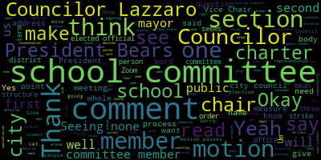
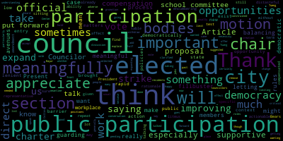
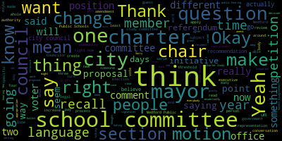
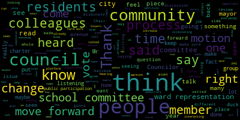
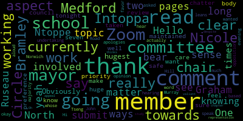
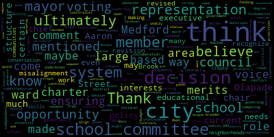
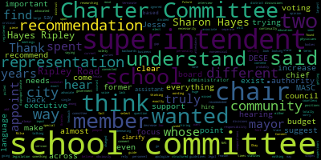

AI-generated transcript of City Council Governance Committee 02-19-25
English | español | português | 中国人 | kreyol ayisyen | tiếng việt | ខ្មែរ | русский | عربي | 한국인
Back to all transcripts
Heatmap of speakers
[Unidentified]: Thanks. Thank you very much.
[SPEAKER_18]: I'm well. Thank you very much.
[Unidentified]: Two, test one two.
[Tseng]: Are you ready? Governance Committee, February 19, 2025. Mr. Clerk, can you call the roll, please? Sorry, we're dealing with some sound issues here. No, mine's quiet. Mine's quiet. Click this one? Yeah, just do test. Try again. OK. Test.
[Marie Izzo]: Test.
[Tseng]: Test 1, 2, 3. Thanks for hanging in there with us.
[Marie Izzo]: Vice President Collins.
[SPEAKER_18]: Present.
[Collins]: Present.
[Tseng]: Okay.
[Marie Izzo]: Councilor Lazzaro. Councilor Scapelli. Chairman Singh. President and if we can try it.
[Tseng]: Yep.
[Marie Izzo]: Vice President Collins.
[Collins]: Present.
[Tseng]: She said present, but Okay, can you unmute and say something for us?
[SPEAKER_18]: Present.
[Tseng]: Yeah, I can only hear.
[Hurtubise]: Testing, testing. Testing. Testing.
[Tseng]: They're saying the people online are saying that we're quiet. The chambers are quiet. Yeah. So they can't really hear us.
[Unidentified]: Yeah, I turned all of them on when they're working. It does come out the laptop. When I do it to the one you just said, it says fail to detect speaker. Make sure your speaker is properly connected. I'm not sure if something got unplugged. Test. Test.
[Tseng]: meeting looking into the Charter Study Committee's recommendations as sent to us from the Mayor's Office. This is also slated to be the last substantive meeting here in the Governance Committee before we send it to the Committee as a whole. That's pending a motion. We are going to be discussing in particular Articles 4 on the School Committee, Article 8 on Citizen Participation Mechanisms, Article 9 general provisions and all other sections, article 10 transitional provisions, and as well as section 2-4, 3-1D, and 4-4 on compensation of elected officials that got moved to this meeting per a motion earlier in the governance committee a few meetings ago. We also have call-in center representatives here in attendance at this meeting as well. To kick it off, We can go straight into article four on the school committee. I know a few school committee members have sent in comments to me. I will read out relevant comments to each section as we go. But before we get there, are there any comments from city councilors either generally or on section four dash one on composition, term of office or eligibility? Recognizing president bears.
[Bears]: Thank you. Councilor Tseng, um, I think the main takeaway from the comments we received in my review, um, and just a review of the charter study committee report, um, and what many other communities in Massachusetts do. Uh, my main question on four one is, let me just make sure it's in here. Um, both the question of the mayor serving on the school committee in general, and specifically that the mayor automatically is the chair, given the views that I've had of the other charters, my reading of the Charter Study Committee, some of the survey results, some of the comments, and the comments from our sitting school committee members, it seems to me that the way this is currently written doesn't really reflect the direction that the community talked about going. And I would like to at least have a discussion about the mayor serving as the chair versus the school committee being able to elect its own chair and potentially also the service of the mayor in general. But after we discuss this section and pending results of the discussion, I'm likely to make a motion to suggest that the may or serve as a member, but that the body be able to elect its own chair.
[Tseng]: Recognizing Councilor Lazzaro.
[Lazzaro]: Thank you. Yeah, I would agree with President Bears. We received comments from school committee member Paul Russo and school committee member or vice chair Jenny Graham both mentioned that the mayor serving as the chair while it's It's great that the mayor has so much of an active role on the school committee and how much awareness that brings for that position into the school committee's decisions and actions. Our mayor is already in an extremely strong position. you know, compared with other cities, the mayor's role is already a huge job. The school committee is also a huge job. It's two huge roles, seems unnecessarily overwhelming. And the survey results stated that people thought that it wasn't appropriate. So I would agree with that. I think it, I'm not sure about the mayor serving on the school committee. I'm not sure if it's better. But I think automatically serving as chair seems like not what the community asked for.
[Tseng]: Thank you. Councilor Lazzaro, I see Councilor Scarpelli.
[Scarpelli]: Thank you. Again, I appreciate the hard work of the chatter review committee and And again, I disagree with my colleagues as a former school committee member for many years. The importance to have the leader of your community, if this committee saw fit that she would still represent a voting member of the school committee is that it's very important and vital piece that that person is the chairperson leading that meeting. It just doesn't make sense that the leader of your community is a side chair to a committee that really doesn't move forward without the power of the mayor. So again, I've read my colleagues on the school committee's requests and what their, what the concerns were for the members that I've talked to in the charter committee that this is something that people supported. And if we were going that way, this is what we needed. And I'll say this probably 10 more times until after the vote, whenever that may be, but the more that this council dips in and changes to fit a narrative, the less likely that this will move forward. And I think that has to be a realistic concern. I've already talked to state delegates that have said that residents have already approached them with the disdain that they've heard already from just the ward representation question. So it's, this is hard work from people that, many people on this council put instead of this process. And a long time with professionals sitting at the table, and it seems like as you read these answers, these questions and these changes, they seem one-sided and set to be, to fit a certain dialogue. I know I've been, in the past, mentioned that everything I turn into is political. You can say it, or you can read it. Because this is exactly what councils in the past have asked for, and many people have tried to change the charter, and we move forward with a group of people that work very hard to bring out this initiative that was supported by the call-in center or vetted out by the call-in center. And already, this should have been something that I read through when I had colleagues in neighboring communities read through and see the process. And again, like I said, I made sure I invested my time to make sure that I looked at what my faults were with what I didn't like about the charter, which is ward representation. And I realized I'm wrong for the fact that having that representation opens up having everybody in this community have a voice. So again, just bits and pieces that as my experience in the city school can remember, I think if we're going to move forward with the mayor being a voted member, it's imperative that whoever that man may be that they're in that leadership role. So again, for whatever it's worth, one out of seven people on a voting council that have seen just the rubber stamp that's moved forward, I hope the community understands as we move forward with the changes that my fellow colleagues keep bringing up, is just damaging what this group has done so hard to bring to fruition. So again, thank you for your hard work. I know that many of you out there spent a lot of time to get the proper information out and vetted with the proper channels, but thank you.
[Tseng]: Thank you, Councilor Scarpelli. I wanted to note that we also have school committee member Nicole Branley here in the audience with us today. I have been, and as I noted before, oh, okay. I have been in talks and former school committee member Sharon Hayes too. I have been talking to members of our state delegation as well. The general gist is that it is in the council's purview to make edits to the city charter, even if those edits are substantive. When it comes to likelihood of passage or not, it's more about whether the model being proposed by the city council is something that the state legislature has seen and passed before. Before I move on to comments, written comments from school committee members, are there any other Councilors who'd like to talk on this issue more specifically about the mayor being chair of the school committee? seeing none on Zoom or in person, vice, I'm gonna read what vice chair Jenny Graham has written to me or in this committee about school committee structure. One of the most concerning aspects of the proposed charter is the provision in article four that allows the mayor to serve as the chair and a voting member of the school committee. The school committee's primary responsibility is to focus solely on the education needs of Medford's children. allowing the mayor to continue to hold a voting role, but undermine this critical separation. I agree, of course, that there needs to be a solid working relationship between the school committee and the chair and value my own relationship with the current mayor immensely. Too often, though, there are clear signs of a conflict of interest between the role of the mayor of the city and the role of the mayor as the chair. For practical purposes, I have observed this when it comes time to discussions of compensation and contracting, and most specifically at budget time. For many years in Medford, the school committee never asked for a penny more than the city had to give. Further, when I asked about the process and how the school committee received the number from the city because surely that's how such complete alignment occurs in my mind. I was met with seasoned members insisting that this wasn't how it worked at all. In my five years, I've never once seen this alignment because the school committee has prioritized putting forward budget requests that reflect our need as the starting point. This step was skipped entirely for many years to the detriment of our schools. If I were a mayor, I can completely understand why such alignment would be desirable, but doing so undermines authority and responsibility of the committee. This is perhaps the most important rationale for removing the mayor from the school committee. The Charter Study Committee's own survey stated that only 20% of respondents believed that the mayor should be the chair of a school committee. In addition, two-year terms are simply too short to cultivate the depth of experience and long-term vision necessary for effective governance in education. Short terms without the stability of longer terms make it difficult to implement meaningful change and may introduce constant disruptions. This next section is more about ward and district organizations, so I'm gonna move on to school committee member Rousseau's comment. on the mayor being the chair of the school committee, the mayor should not serve as the chair of the school committee. The rationale for maintaining this arrangement seems to downplay the significance of the school committee, treating it as just another committee to oversee. In reality, being the chair of the school committee is a substantial responsibility. Additionally, there is a widespread misunderstanding regarding the mayor's authority, with many from the public to other elected officials in school and municipal employees believing it exceeds that of other school committee members. This misconception creates significant issues. It's now crucial more than ever for elected officials to operate strictly within the legal authority granted to them rather than any authority they choose to assert. the structure of the school committee and city council should be consistent. Whether it is entirely at large, entirely ward based. This is also about the ward district organization. from a school committee member in Tapa. I have the following comment in regards to the mayor's seat on the committee. I am impartial. I do see the benefit of both aspects as presented by some of my colleagues on social media. I could very well see the benefit of having a seventh seat for someone to run for in the school committee race. With that being said, I did come in seventh last election, so maybe I have a bias towards that proposition. Are there any other comments from current school committee members? Yes. If you have comments on the mayor being chair of the school committee, name and address for the record. Give me one sec. Let me turn you on.
[Branley]: Hello, Nicole Bramley, 54 North Circle in Medford, member of the Medford School Committee currently. I did not submit any comments on any of the topic. I did read over Member Graham's. I read over Member Ntoppe's. I did read some of Member Ruseau's. It was 12 pages long, so bear with me. But yeah, so for Mayor being our chair, I see it as two ways here. One, no matter who the mayor is, I'm going to just say she because she's currently our mayor. I do like it for the sense that she is involved with knowing what's going on at the school at all times. Obviously that is my hugest priority to make sure our schools are safe and well-maintained and taken care of. So I do like that aspect of it. But then there's the other aspect of it that I feel like it should be a seven-member body just like the council. So I really don't have a preference. I want to thank the I know some of those members are here tonight and on Zoom for all the work that they did on the chatter review. It was a huge undertaking. So thank you for that. I really don't have much to comment about for once, for once, but I wanted to be here just to hear what was going on. So thank you.
[Tseng]: Thank you, member Bramley. Do we have any other comments from current school committee members who might be on Zoom or Councilors before I open, or well, we don't have a motion before yet, but before I open this up for public participation. Seeing none, do any members of the public want to come and speak about this issue? And if you're on Zoom, please raise your hand. Name and address for the record, please. Oh, there we go. You should be live.
[Van der Kloot]: Is that good?
[Tseng]: Yep.
[Van der Kloot]: I live at 146 Pine Ridge Road. Good evening, members of the City Council Governance Committee, Chair Tseng, fellow members of the Charter Review Committee, and Medford community members. As you know, I served on the school committee for 32 years. I asked to be appointed to the Charter Review Committee when I realized there was no one with school committee experience on the Charter Review Committee. While some of my former school committee colleagues may not agree with what we have put forth in the draft, that you are reviewing tonight, rest assured that it has been put forth with deep reflection, not only my own, but with the very diligent subcommittee and the entire Charter Review Committee. As someone who served with three different mayors, I strongly advocated for the mayor, whoever it might be, to remain as the school committee chair because the advantages are so strong. As a school committee member, I had access to the mayor at every meeting. Not just me, every school committee member had the advantage of being able to discuss key educational issues in front of the mayor. being present at the school committee meetings ensures that the mayor is familiar with all the issues in detail and has buy-in. Our charter subcommittee interviewed all three mayors and each underscored how important it has been or is for them to fully comprehend school committee issues, our school issues, especially given the significant percentage of the budget which is spent on education. I remember the frustration of my colleagues across the aisle, that is you, the city council members, in former years when mayors did not come before them. You never heard that from school committee members. We worked closely with the mayors and they had buy-in. To my former colleagues eager to do away with the role of the mayor as the chair of the school committee, I can only say be careful what you ask for. School committee members play a very vital role in supporting all students and education, and that is enhanced when the mayor who recommends the budget is not distanced from the intricacy of the issues that become before the committee. Remember, the mayor only gets one vote, not more, not less, than any other member.
[Tseng]: Thank you.
[Van der Kloot]: Later, I hope to perhaps address some of the other issues.
[Tseng]: Sure. Thank you, former school committee member, Vanna Kloot. Do we have any other members' comments from the public? Please feel free to line up behind the mic. I do see that member Olapade from the school community has joined us on Zoom as well. We will take your comment after. Thank you. Name and address for the record, please.
[Giovino]: Ron Givino, 326 East Border Road. Just quickly, data is data. It can go You know, we talk about survey. Survey can favor you. It can, and next week it's too small a data sample size. So we have to be careful about that. I would also say that this committee spent two years with data that was given to us from the citizens. The input that we used to make this was not anybody's agenda. It was just that data that we developed and heard the citizens. I think what happens is, the number one goal for us was take the faces off of the people sitting behind the rail. Take the faces off the people that we're trying to create this charter for. And I would also, just in closing, say to take a look at Superintendent Edouard-Vincent's interview, which hasn't been referenced yet, and Mr. Roy Belson's as well, that praises the Chief Executive Officer, as a person who needs to be in charge of the whole city all the time. It was our opinion, you know, that the chief executive officer is gonna know about the school committee. And whoever that is, is the chief executive officer. So to me, all these names that we're throwing out with opinions, I think Belson and Edouard-Vincent are two names that, you know, support having the mayor on the committee and as chair. So I just want, I'm talking to the people at home at this point. Those are facts as well.
[Tseng]: Thank you for your comment. Alternating over to Zoom, member Olapade, I'm gonna ask you to unmute. If you can give me your name and address for the record, please.
[Olapade]: Thank you very much, and thank you to the broader city council. My name is Aaron Olapade, current school committee member. My address is 105 Brooks Street in Medford, Mass. So I just wanted to add a quick comment, I believe. I think that the continued structure of the mayor serving as both the chair and a voting member of the school committee, I believe that there is a clear conflict to a certain degree. I think it undermines the committee's ability to function, I think, as an independent governing body. I think the fundamental role of the school committee is to advocate solely for the educational needs of Medford's children, free from competing municipal interests, budget constraints, or even political considerations for that matter. I think a strong working relationship between the mayor and the school committee is essential. to ensure collaboration and alignment. I think the dual role of the mayor as both a voting member and the chief executive of the city creates kind of an unavoidable tension between these two responsibilities. I think that the mayor's voting power can unduly influence, might be the word, decisions related to the school funding, contract negotiations even, or policy priorities. areas where the interests of the city government, you know, and the needs of the school district don't automatically align may open up the opportunity for a misalignment. I don't, you know, I do recognize the arguments that have been made both in the charter and by members of the larger city as having the mayor continue as the chair in that leadership role. It was both, as I mentioned, the chief executive of the city and having a legitimate participation in the school's decision. but having them act as a voting member feels like there's an opportunity for there to be a misalignment. So I do believe that there is an opportunity for us to consider that. The decisions that is made ultimately is up to the greater council right now and I do recognize the amount of work and effort as mentioned previously by a current member in the audience. Multiple years have been put in to make this revision revised charter come to light. And so I'm very proud of them for doing that. And I thank them for their work. But I do believe there is an opportunity to reconsider this component of the revision of revised charter so far. So those are my comments. Thank you so much.
[Tseng]: Thank you, Member Olapade. Going back to the chambers, name and address for the record, please.
[Hays]: Is it on?
[SPEAKER_18]: Yes.
[Hays]: Okay, thank you. Sharon Hayes, 69 Ripley Road. I'm a former school committee member. I just wanted to add what I said in my interview with the charter committee. I do advocate for not having the mayor be the chair of the school committee. However, I do believe she should be on the school committee. I think it's critical to have her there, to have her hearing everything that we're talking about. The school budget is the single largest piece of the city budget. So to not have our chief executive there to hear what is going on in the school, to hear what the school committee is thinking about, I think would be a huge gap. I think having her on as a voting member, her again as member Bramley, I'm saying her because our current chief executive is a female. I think it's important to have the vote there from the mayor. I think, however, as the chair of the school committee, the chair does guide the discussions. I do think that having a chair whose whose focus isn't divided, whose focus is solely on the needs of the school and not necessarily having to contend with all of the other needs of the city is truly important. So again, I personally advocated with the charter committee for having the mayor not be the chair to have the school committee elect a separate chair, but for the chair being a voting member of the school committee. Thank you.
[Tseng]: Thank you so much. Do we have any other members or comments from members of the public on the mayor being chair of the school committee? Seeing none, I do see President Bears has requested to speak.
[Bears]: Thank you, Chair Tsang. I think just to apply the discussion that we've had here and what we've heard from everybody, The most important thing that I think we need to remember is there are two, essentially two organizations. in Medford that make up the government of Medford. There's the city of Medford and there's the Medford Public Schools. The chief executive officer of the Medford Public Schools is the superintendent of the Medford Public Schools, who is appointed by the school committee, which serves a combined executive legislative function, which is different than the city council, which serves a legislative function only with the executive function of the city in the role and the hands of the mayor. When we have a mayor who is the chair of the school committee, chairing, guiding the executive committee, who oversees then the superintendent, who is the appointed chief executive, you essentially have, I think, what is that, what former member Hays said, that divided division of attention between the two organizations. There's an assumption that the mayor can run the schools. I think it actually, in many ways, can disempower a superintendent. to have a mayor, not just being the chief executive of the city of Medford, but also being the chair of the executive committee of the Medford Public Schools. And I'm not speaking to this mayor or the last mayor or the mayor before in any specific way, but exercising, whether intentionally or unintentionally, powers beyond the role of a member of the school committee. And that, I think, is the fundamental question here. We need to understand that there are two institutions that we're talking about, the city of Medford, which is governed by the mayor and the city council, and the Medford Public Schools, which is governed by the school committee. And I think the arguments made that having the mayor serve as the chair of the school committee creates potential conflicts or division of attention or whatever other frame or set of words we want to put to it. is valid. So I would move, make a motion that we amend the draft charter to keep the mayor as a serving voting member of the school committee, but not serving as the chair and to update the sections as needed to reflect that change.
[Tseng]: We have a motion from President Bears. I also see, I recognize Councilor
[Lazzaro]: Thank you. I just want to say one more time that I don't have a problem with the strong mayor system. Many cities in Massachusetts have strong mayor systems. I think that we have already sort of moved through that section of this charter, and we've said, yes, that's fine. We have a strong mayor system. That's fine. Um, it's just, you can have a strong mayor, uh, and you can have a legislative system in the city and you can have a school committee, but when you also give the mayor, uh, access to the school committee to this level, I think it's too, I think it's too much is, is where I think I'm falling on this. And because. If we are picking and choosing the things in the data that we want to agree with and disagree with, I mean, it's hard to say what parts of the research and the surveys and the whole thing, I think we have to, as a city council, we have to look carefully at what makes the most sense for the city. We had a mayor for a very long time, um, in Medford, and, you know, we're still seeing some of the impacts of that. And, uh, you know, I think we have to bear that in mind as we review this charter, and some of that is influencing the way that I'm looking at it. Um, thank you.
[Tseng]: Thank you, Councilor Lazzaro. Um, are there any other comments before we take the motion? Yes.
[Scarpelli]: Councilor Scarpelli. Again, I bring to the fact that it's contradictory to the fact that we support a strong mayor form of government, but at the same time, you want to cut their legs off and in a position where that holds the biggest budget in this community. In essence, what you're doing is putting the mayor to the side and saying, We're going to work with what we think is right and plow through it. And the checks and balances are gone. I think that's what happens. I've sat with three different mayors. I've seen it happen. And having a strong council with a strong mayor that's leading the city will pay dividends. Unfortunately, as I read a lot of what my colleagues on the school committee have said and what I've heard tonight is very simple that it seems like it's more ego driven. It seems like it's a little more power driven and I don't think it's really driven behind what's best for the school and the city because ultimately having the mayor chairing that committee It's that checks and balance, that person at the top that's saying, we know what the school committee needs, but at the same time, we have those balances from the city side, right? So what we have now by eliminating that process is truly eliminating a big piece of the process. So again, it's just, It's going to be interesting where the vote falls tonight, and it'll be interesting where the vote falls, the community as a whole, and then in the final vote. It's going to be interesting because, my mother used to say, if it quacks like a duck and walks like a duck, it's a duck. So if you see the votes changing and you have six members all in tow, because that's what I've read so far from my colleagues across the board, it seems like everything is in tow. And it reflects back to the ward representation piece that even from their platform, they've diverted. it's gone totally against what was originally created for a community group to do its due diligence and to see what they've done and brought forward. I'm not saying that we shouldn't make changes if we see changes, but so far what I've heard are really damaging changes for one demographic. So I'll be interesting to see how the vote goes. Thank you, Mr. President.
[Tseng]: Thank you, Councilor Scarpelli. Just to mention, just to note the vote on war representation was not 6-1. Well, it didn't go through the whole committee, but also was not everyone besides one councilor. We have a motion on the floor. Is there a second for that motion? We have a second from Councilor Lazzaro. Mr. Clerk, when you're ready, can you please hold the roll? Thank you. Yes, President Burrs, would you be able to?
[Bears]: Motion to not have the mayor serve as the chair of the school committee, but to remain as a voting member of the school committee. Further motion to update all relevant sections of the charter to reflect this change.
[Marie Izzo]: Vice President Collins? Yes. Councilor Lazzaro? Councilor Leming?
[Tseng]: Oh, he's not in the meeting. Oh.
[Marie Izzo]: Councilor Scapelli?
[Wright]: No.
[Marie Izzo]: And Chair Singh? Yes.
[Tseng]: Four in the affirmative, one in the negative. Oh, oh, sorry. President Bears? 4 in affirmative, 1 in the negative. Motion passes. Sorry, I just read your thing. Do we have any comments from Councilors on ward representation for the schools? I have some comments from sitting school committee members. I saw President Bears first and then Councilor Lazzaro.
[Bears]: Thank you chair saying my really my only comment on this is that I think this is a great structure. And that's why I think it should apply across the board. And that's why those were the proposals that I made. So I really appreciate the work of the charter study committee and developing this approach to local representation here in our community. Thank you.
[Tseng]: Thank you. Recognizing council Zorro.
[Lazzaro]: I feel very I'm frustrated by the comments. I'm not frustrated by the comments. I misspoke there. The comments that we received from the sitting school committee members this week on the clarity, I feel that I got from the way they spoke about the internal symmetry between the two bodies, the elected bodies in Medford, helped me understand the importance of the two, both the school committee and the city council reflecting each other and that I am frustrated by the fact that they are currently in this draft of the charter. They're not matching and I'm not sure how to Because the lines of the words don't match the schools, because the schools are four elementary schools and two middle schools and one high school, and you can't really assign a school committee member to a school, of course, and because that doesn't make sense anyway. Because students age out and these things just, that doesn't really align. I think the, importance of school committee and city council aligning with each other. That's a valuable thing to mention. School committee member Graham and school committee member Ruseau both mentioned that specifically in their comments, and I thought that was important to note on the floor. So I just wanted to say that. Thank you.
[Tseng]: Thank you, Councilor Lazzaro. Do we have any other comments from council members before we move on to the comments from school committee members? Seeing none, are there any sitting school committee members either in person or online who'd like to comment on ward versus district representation for a school committee? Seeing none, I'm going to move to the sitting committee members' written comments first, and then I'll move on to public participation. On ward representation, this is from Vice Chair Graham. As the council considers their organization of the city into districts, I strongly urge that the boundaries for both the city council and school committee be aligned. The government should work for its people. The very first step in that process is in knowing who is there to support you. Having two different structures will be confusing and I can't see the value it will provide to our residents. I agree that the school committee should continue to be comprised of seven and would support such a size for the council as well. The current proposal, with its focus on district-based school representation, does not fully account for the practical realities of our school system. At the middle and high school levels, every school committee member is responsible for decisions affecting all students, regardless of district. This effectively makes their role smaller to that of an at-large member, serving all students. At the elementary school level, the reality is that students often attend schools that fall outside the boundaries of their proposed district, pushing the responsibility for those students onto at-large members. This model does not reflect the interconnectedness of the issues we face across all grade levels and undermines the unity of the community. Our community cannot afford to deepen the divisions between our schools. Medford students deserve equal opportunities for high quality education regardless of where they live. A district based approach could risk exacerbating existing tensions between our school communities, something we are actively working to bridge. I don't have perfect answers here because I am very interested in increasing representation of our elected officials and ensuring all corners of our city are reflected in our school committee. I am further interested in creating pathways to service that are not as prohibitively expensive for candidates. I simply highlight that achieving the goals of representation will present other practical problems. I have this following comment from member Rousseau. The structure of the school committee and city council should be consistent, whether it is entirely at-large, entirely ward-based, or a combination of district, ward, plus at-large members. While I do not have a strong preference for a specific model, the district two or plus three at large members model seems reasonable. Regardless of the chosen model, it should mirror the council structure to avoid confusion among voters who already struggle to understand our government structure without multiple formats within a single city. A child growing up next door to me will attend one elementary school, one middle school, and our one high school. The physical location of these schools is irrelevant for representation. What matters is where the resident lives. A school located in my ward is no more, quote, my school than any other when it comes to representing my constituents. There may be an instinctual belief that ward-based school committee representation offers something unique compared to at-large representation, but this does not hold up when considering a resident's perspective as their child progresses through the school system. No elected official can reside in a ward or district encompassing all the schools a child will attend. So there is no logical basis for arguments centered on the physical location of schools. From member Intoppa, I have, in regards to the combined ward representation, I feel conflicted. As an independent candidate, only having to campaign physically in my respective territory is a significant financial and time advantage. That, however, should not be the driving factor in implementing ward or combined ward representation. I only acknowledge this as fact and my immediate reaction to that change. I think we also need to do important work to acknowledge that even though members may represent different word combinations. that the members do not only represent those within that district that attend said schools. Ward representation makes more sense to me for the city council. However, I feel the implementation of a majority ward-based representation school committee could make it easier for community members to relay their concerns to at least one designated individual. It almost feels more personalized. I digress. I also see member Olapade has his hand raised on Zoom. So I'll ask you to unmute.
[Olapade]: Thank you again, Aaron Olapade, 105 Brook Street, for the record. So I, like I think many of my school committee colleagues' comments that were just made, I think I'm also conflicted. I see the merits for both systems, both an at-large or award-based representation system. I think ultimately ward-based representation has its merits for sure. I think particularly ensuring that all neighborhoods in any given area or city have a direct voice in the governance of a city, school-wise especially in this conversation. I think in many cities and certain communities, you know, those I think in some ways like Medford that have historically underrepresented and potentially marginalized communities may struggle to have their concerns heard and at large systems where candidates often come from maybe more politically active or maybe more engaged areas of the city. I think this structure helps promote like geographical diversity and decision making skills, ensuring that no single part of the city dominates the decision that we are having if you are operating off that system. That being said, though, I think a war representation sole system for a local school community can create challenges. and ensuring equitable governance and effective decision making skills. I think, as I mentioned, you know, war representation is often designed to give a voice to different neighborhoods. It can also lead to fragmented approaching when it comes to educational policy. Education, as we know, is a citywide issue that requires, I think, a unified vision. But ward-based representation can encourage, maybe let's call it a more parochial mindset, depending on the conversation that we're having. I think both, as I mentioned, have their merits. I think, ultimately, I do believe that the City Council and School Committee should be similar in the way that they're structured. And so if the decision is that city council is going to be both wards and at large, I think the school committee should follow in the same manner. But ultimately, I think it's the decision of the people and how each system ultimately avails the citizens to the voices that are needed to, I think, impact the students the best way. So, thank you.
[Tseng]: Thank you, member Olpade. Moving on to public participation. I know I saw some hands in the crowd. If you're on Zoom again, please raise your hand so I can see it. Name and address for the record, please. Oh, sorry. No, I've done it.
[Milva McDonald]: There's a red. Yes, yeah, you're live. Milda McDonald, 61 Monument Street. I just wanted to make the point that because there's been discussion that the city council should mirror the school committee in its structure. And I just wanted to make the point that the two bodies are very different. Their jobs are very different. The city council legislates for the entire city, represents constituents across the city, and the school committee has a more narrow focus there. Addressing only the school. So that was one of the things that the committee considered. We did not consider them the same because they're not the same. Communities all across the state have different configurations for city council and school committee. In fact, I think it's probably less common for a city to have the exact same structure for both bodies, but the call-in center could maybe correct me if I'm wrong on that. There are plenty of communities that have ward councils and at-large school committees. So I just wanted to make that point. That was not something that the committee thought about because simply because they're different bodies. And as far as voters getting confused, voters would have their ballots and their candidates would be on their ballots. We have systems across the state and across the country where people living in the same community have different elected representatives. Right here in Medford, our state reps, depending on where you live, are different. So voters figure this kind of thing out all the time. Thank you.
[Hays]: Sharon Hayes, 69 Ripley Road, former school committee member. I just want to support everything that the chair of the Charter Committee just said, Milva said. I find it somewhat nonsensical and in some ways almost demeaning to the members of this community to suggest that they wouldn't understand different compositions of our two very different bodies, the school committee and the city council. I just don't even understand how that could come up as a reason. They are two very different, they have two very different scopes of authority, of responsibility. So I, I don't even understand how that comes up as a question. I'd like to make the point, too, that where divisions exist and distrust in our government exists, you can almost always trace it back to either a lack of representation or disproportionate representation. And so what we are looking at is ways to increase representation. What the Charter Committee has recommended across the board are ways that will increase representation among the people of this city. But what I'm continually hearing in the meetings that I've seen is a move backwards from this committee, this council, to look for ways to decrease that. And I truly don't understand that. I am totally in support of the way that the Charter Committee structured this. I think obviously, as they've said countless times, they spent two years on this. They spent two years researching this. They spent two years getting community feedback that said across the board that the community wanted more input. wanted more representation, wanted more to feel more connected. And so I truly don't understand why we would suggest otherwise at this point. If we go back to all at large, then nothing has changed. And so the voice of the community, to my opinion, has been ignored. Thank you.
[Tseng]: Thank you. Member Ranley.
[Branley]: Hi, Nicole Bramley, 54 Norwich Circle. My comments are actually from member Intoppa whose Zoom is not working. So he's asked me to speak for him if that's okay. So John Intoppa, 12 Murray Hill Road. It says, my apologies to the committee as Zoom is not working in my favor this evening. After hearing my comments read aloud, thank you, Chair Tseng, it is not clear to It is not clear that my opinion leans more towards the opposition for majority word based representation. This is despite my comments of appeal towards it. Thank you. And that was it. Oh, and he thinks the valiant work of the chapter study committee. Thank you.
[Dixon]: When Dixon 61 Monument Street. I don't really have. I just want to sort of re emphasize what they've said before in a perhaps a different way, using the districts for school committee. is not about having a school in every district or that those councilor, those committee members will represent those schools in their district. It's about representation, making sure that you have people on the committee that are from all parts of the city. That's what it's about. So there's no confusion about that. Also, I would just like to reiterate the voters' experience, even if there's wards for the city council, districts, for the school committee. The voter's experience is the same. They're going to go in, see a ballot. It's going to say, choose this many from the large list. And they'll say, choose this from your district for school committee. And they'll say, choose this person or that person for city council. confusing. It's not going to be confusing. It's the same experience. You see this ballot and you have a choice and it's laid out clearly. I don't see what's so confusing about that. The other thing is, um, It would be great to have ward representation for the school committee, but I believe that they didn't go with ward representation and went with the districts because you don't want to have a school committee with 11 people on it, which is what you would have to do if you went to ward representation. So they broke it up into four districts, and that makes sense for the school committee. It doesn't make sense for the council. I think those are my points. Yes, thank you.
[Tseng]: Thank you, Mr. Dixon. Any other comments from the members of the public, either on Zoom or in person? Any other comments from councillors?
[Giovino]: Ron Givino, 326 East Border Road. I'm just going to keep it something simple. And again, I'm talking to the public. First off, when a public official is worried about the competency of the voter, an apology should be as public as that comment as well. Secondly, understand the concept. I think if four school committee people lived in the Roberts community, Are you saying that the Roberts school is going to get all the attention? Of course not. Where the rep is has nothing to do with a specific, what it does do is it brings new blood, new energy, new ideas to a school committee that needs them. And we heard clearly from the existing school committee, 11 is way too many to manage. I get that. Nobody seems to be able to come up with a plan that unifies both groups, which I don't understand why that would be the case anyways. But to think that if you're elected and you live on Salem Street, is that your only issues are on Salem Street? Of course not. And the fact is there are three reps probably that live in a neighborhood of one school. They're not thinking that way. I don't know why we're thinking that way. This is just to put new blood, which a lot of our interviews, past and present, said it would be nice if we had a chance to run a cheaper campaign, not have to worry about that, get more people involved, wake up the neighborhood. That's what we're doing here. We're not saying, I want to make sure Roberts gets attention because Brooks gets all the attention. It doesn't happen that way. So simply put, the voters are smart enough to know, and that's why I'm speaking to. And secondly, I want to say this, and I would have said this eventually, we put two years into this project. If a report that came out 48 hours ago has more weight than the two-year project, then we should have just been told not to do the school committee section. Thank you.
[Bears]: Thank you, Chair Tseng. I think what we're getting to here is suggestions that proposals come from not a place of good faith. And I think that's toxic and I think that's divisive. I think we all agree that greater representation is a key goal of a new charter. I've said that since the beginning of, before I even thought about running for office. How we get to greater representation, we have an honest disagreement on. I think when we talk about this question of voter competency, I don't think member Ruseau's questioning voter competency, I think it's, completely unfair to say that the structure of government doesn't impact the ability of the voter to understand their government. And I think that's a good faith comment. Now, no one generally likes it when I say this, but I did go to school for this and I did study this and I have studied extensively models of government. And it's just not true to say that the way that a government is structured doesn't impact a person's understanding of how they participate with that government. And I don't think it's true to say that everything in the Charter Study Committee's recommended draft is the perfect way to increase representation. If we make any changes to it, then you're against increasing representation. I just don't think that's true. I think we have honest disagreements about what it means to structure the government of the city of Medford. and the governance body of the Medford Public Schools. I think we have honest disagreements about what it means to have more representation. I don't want to call you out here, Chair Tseng, but you've said very directly, at least in some comments that I've heard recently, that as the one person of color sitting on this committee, who I think does deeply value racial diversity and representation, and also has studied this maybe at a better school than me for more time than me more recently than me, that you don't necessarily agree that what was proposed achieves the goal. It's an honest disagreement. This is the process. The study committee has put together its recommendation, this council, and as a councillor, this is my job. I have to put my name and my vote to a recommended charter that will go to the mayor, that will go to the people, and the people will vote. I don't come at this from any other position than I am making the proposals and thoughts that I think will create a structure of government that advances and increases representation for the people and that will serve this community for years to come. And I think if we go as we have been the past few meetings down this road, that it is not from that perspective that we are all approaching this fine, but that's what's toxic and divisive. And that's what's going to make it harder to pass the charter. And again, as I said, in my remarks to the state of the city, I cannot wait to vote on a new charter for the city. The charter that we have now does not work. I really deeply appreciate the work of the study committee to put together a proposal that I think by and large, even if every change I wanted to make, which is not going to happen because that's not how this works, 90% of it would remain intact with no changes at all. I think we're going to end up with a good product out of this committee, a good product out of committee of the whole good product out of the council that will go to the mayor that will go to the legislature who I have spoken to who said this is going to move forward. Your changes are not out of the scope of this process. And I hope that that's the result that we get. But I think the more that we have the conversation with the idea that this body should not be able to, or should not make specific changes because they are for some reason other than the reason that people are stating, that's what's going to derail this process. So again, we have an honest disagreement about how to increase representation and what a new charter looks like. And I'm putting forward what I believe increases representation based on the research of everything that I've read, which includes the entire study committee report, my five years of experience serving on this council, my 10 years service experience in state and local government in this community, my four years of education on political systems and structures, and the opinions that we're hearing from the people who are speaking here. We can keep going down the road and we can keep ascribing motive to people that are not the motives that they have, but I don't think it gets us anywhere. Thank you.
[Tseng]: Councilor Scarpelli.
[Scarpelli]: Thank you, Chairperson Sang. I think that when it fits a dialogue, the speech can follow. What to defend it when I have members of the revolution Medford responding that a platform that they ran on that my colleagues ran on clearly stated ward representation. And one of the big things that as I started researching to change my mind, that helped me change my mind to what I needed to learn about ward representation, I thought was the piece that I think it's disingenuous to say that's not true, but to have a more diverse population and giving people an opportunity that normally wouldn't have the opportunity to run in a system we have today. So having every ward represented and my colleagues can say I'm wrong and say a lie to put words in their mouths, but it was said in the past that there are some wards that are so small that shouldn't be represented. And that I wanted to make sure when I went back and looked at that video, that that was said and understanding that what I believe Mr. Gimeno said is creating more life. Those wards that have been underrepresented are those wards that haven't come out to vote because they don't feel like they're part of the process. They don't feel like they're part of the community. So there's a huge divide. So I just think that the key piece that keeps coming back in so many issues in our community is our, it's very simple that the question that keeps coming back are the people that we elected, are the people that are sitting on the council floor, the people that are sitting in the school committee floor, are they really listening to us, the community, not 7500 people, not people like minded, but are they listening to the whole community? And this isn't divisive. This is just Like I said, like Lily Scarpelli said, quacks like a duck and walks like a duck, it's a duck. You could follow the votes as we move forward. And it seems like it's ego driven and made to keep one group in place. because when you're flopping on what you promised and then you come back and belittle people in the sense that not understanding, using excuses or words, that that's what divides the community, not listening to the people that were put instead of this group and have worked so hard to do that, have listened to the professionals that sat with our leadership and our volunteers. So It is what it is. People aren't listening that are voting, that vote that represent you. They're just not listening. So I would stand against what my colleagues say. You can have as many years of education on this topic as you want, but the bottom common sense failing of community and disengagement is evident with this vote and this, what we're hearing so far with all these changes that we've seen. So listen, there's one Councilor that Ms. McDonald, I've spoken to you directly and I can honestly look you in the eye and apologize because I let my ego get in the way when I was against charter review for the fact of the ward representation. But for one Councilor, I sat back and you realize when you talk to different groups and different people and you know, notwithstanding the respect the council that's of color on this council, but I've spoken to many people of color in our community that feel that they don't have a platform to run. And the way, and the ward representation is the avenue to run on the council side. I think the format that was in place for the school committee as a former school member, like Mr. Gervino said, I think that's moving in the right direction. I think that really opens up and entices people to run. And that's why it's important not to have all that lodge. So I see the benefit. So again, if I can implore anything to my colleagues and the voters is that very simple, please listen to all residents, listen to everybody, have an open mind. because it's clear that that's not what we're getting.
[Bears]: Thank you. President Bears. Thank you, Chair Tseng. I do have an open mind. We change things all the time in this body based on the things that we discuss and the things that we talk about. The proposal that I came forward with was amended on this floor. when we talk about listening to the whole community, we can listen to the whole community. And I don't mean to spot member Van der Kloot here, but you had a great line when we were in a very, very tense time in the city and you had many, many intense meetings about a name change for a school. And I'm probably going to botch the specific line, but I think the gist of it was we are listening. We just don't agree. That's the gist of it. You said it better. We had that conversation. If we were to listen to everybody in this community, 100%, every single member, every single person would require me and George and Milva to agree 100% on everything and create a document that we all perfectly agree on. We don't agree. So we can't do that. The voters put us here. This is the city council that has to review this charter. We have been put here to do our duty to the best of our ability. And I fundamentally believe that's what we're doing. I believe that's what you're doing, Councilor Scarpelli. I believe you're representing what you believe to be the best approach, the best path forward. I also believe that of myself and Councilor Lazzaro. I believe it of Chair McDonald. I believe it of Mr. Chivino. I believe it of everybody in this room. And I believe that compelling arguments can be made to change people's minds. I, for example, haven't heard any councilor say that because member Graham and member Rousseau said it, we should have all at large or that the mayor shouldn't be on the committee at all. And those changes weren't proposed. So when we, when we put this stuff forward, I mean, it's just an honest disagreement. And I, you know, I asked the voters to listen as well. If you want, if you are a single issue voter on the charter and you want a different outcome on the charter than what's good, what may or may not come out of this committee, then you should ask the people who you want to elect what their opinion exactly is to the letter and have them follow it. As someone who wrote the platform that's now been brought up twice around this question, it didn't say there shall be eight ward representatives and three at-large representatives and that is the only system by which we will follow. If you read the full paragraph in the context of the Men for People's platform from 2023, it talks about representation and it has a context of having more local representation. And there were honest disagreements in the people who drafted that platform, honest disagreements in the interpretation of the people who are seeing it now about what it meant. And you know, whatever, throw it in our face. I should have seen that. And I should have added a little more nuance to something that's highly nuanced. My bad, use it against me. It's okay. As I've done here for the past five years and hope to continue to do as long as the voters will have me, I'm gonna do what I think is right and what I think gets us the best outcome. So we can keep throwing stuff around to the other effect. It's not gonna get us anywhere. Thank you.
[Tseng]: Thank you. I see Councilor Holland said, do you still wanna speak?
[Collins]: I'll hold for now. Thank you.
[Tseng]: Thank you. Um, are there any other comments from Councilors, we, we don't have any motions on the floor, I see two hands raised, but I will. I wanted to give Councilors a chance to speak. Seeing none, I'll take these two comments, and then if there are no motions, we should move on to the next section. Gaston Fiore, I'm gonna ask you to unmute. When you unmute, can you give us your name and address for the record, please? Thank you.
[Gaston Fiore]: Thank you, Chair Tseng. Gaston Fiore, 61 Stigney Road. I think in considering the structure of government, we should take into account the complexity. And given the complexity that we are talking about, I don't think voters are gonna have any problem at the time that they're voting in choosing either a city councilor or a school committee member, or for that matter in understanding their structure of the local government. I think what we should focus on is possibly an increasing representation or some other means of increasing participation of residents in the voting process. Because I would like to remind everyone that the participation rate in local elections covers around 30%, which is pretty low, at least for my standards. And we haven't seen it increase in the last few local elections. So we can discuss structured government and what would be the best system to have, which is a really important discussion to have, but at the same time, I think we should be discussing what could be done to increase engagement of residents in their government and to bring that participation rate in the local elections a lot higher than what it has been for the past few years. Thank you very much. Thank you.
[Tseng]: Zachary Chertok. Let me ask you to unmute once you're on mute, name and address for the record, please.
[Zachary Chertok]: Zachary Chartalk, 5 Allmont Street. So I just do want to call, and I apologize for being a little bit late to this process, but in assessing past experiences where particularly interstitial cities with a changing Demographics, such as ours, and as part of a greater metropolitan area. Have attempted to, or undergone changes from more representation to districts. There have been studies done by the, and from as long ago as 2008 up until most recently 2023. that all show that inner district representation suffers under a districting model where multiple demographies are grouped together in districts and consequently they often tend to favor the more wealthy interests within the district itself. that often leads minorities and particularly when we're talking about schools and resourcing, you know, on the public resourcing side, senior citizen residents on the school side, those with disabilities or in need of special needs, often fall lower in budgeting priorities over the interests of the wealthier majority that's trying to push for a higher achieving academic curriculum. So I would highly encourage that if they have not already, that the city council move to look at a deeper review of historical and current studies on this issue. In addition to the two-year process that they've done working on the design of the policy. From what I've read so far, some of that abstract and background is missing. Thank you.
[Tseng]: Thank you. Marie Izzo, I'm gonna ask you to unmute, name and address for the record, please, once you unmute.
[Marie Izzo]: Hi, sorry, took me a minute there. I just want to thank all of you, the work of the Charter Review Group, the Council, everyone involved in this process, because I feel like this Council is really engaging the community as a whole, just by reviewing everything that has been tabled for years. It's created a lot of controversy, but this is a healthy process. I've sat through many meetings in the past that were completely unattended with nothing happening and very little public participation. I'm thrilled that we can have You know, healthy discourse we don't have to agree. I just want to mention that I'm in favor of ward representation, and I'm happy with the numbers chosen by this council in good faith. I also want to say that for the majority of the Councilors. In watching, you know, the day-to-day campaign that went on for years, you know, and all the door knocking that occurred and getting, you know, an idea of what people want for this city, you know, I think it's really not fair to say that this community is standing behind this process. And that's really all I have to say. And just allowing people to speak up, say what they have to say. But yet I'm very confident that at every stop, all the way door to door. I've been here 30 something years. My family's been here 50 years. I've never had anyone knock on my door. From the past, Councilors that have been here for many, many years, I have no problems calling them. If people agree with me and I call, they might call me back. If they disagree with me, and I'm talking about in the past, then they wouldn't call me back. So I just really need to say this. out loud. And I'm thrilled that we're going to change this charter. And again, it's a hard process. It's not perfect. But thanks again for allowing us to speak up and be part of history in Medford. Thank you.
[Tseng]: Thank you, Marie. Seeing no other hands from Councilors or on Zoom from members of the public, there are no motions on the floor. I think this is, I want to remind the public, the City Council as a whole has not made a final decision on the type of, the composition of the representation yet, and that we will be picking this up at the next committee, the whole meeting on this topic. I do have one more comment that I neglected to read. And then I think we can move on. It seems like we can move on to the next section. But this is part of Vice Chair Graham's comments on section 4.1. Two-year terms are simply too short to cultivate the depth of experience and long-term vision necessary for effective governance and education. Short terms without the stability of longer terms make it difficult to implement meaningful change and introduce constant disruptions. If a district ward and at-large structure remains, perhaps the council should consider extending at-large terms to four years and align with the mayor's term and re-election pathway. This could help foster stability, ensuring that school community members can focus on long-term educational goals, as importantly, with such short terms, a recall provision would be counterproductive, potentially politicizing our work. That being said, I just wanted to make sure I didn't miss anything from comments that were sent in from elected officials. Do we have any other comments on Section 4-1 before we move on to Section 4-2? Seeing none, section 4-2, school committee organization, chair, vice chair, and clerk, secretary. I have some comments from school committee members, but are there any comments from city council members before I get to those? seeing none in person, seeing none on Zoom. Let me read what Vice Chair Graham has sent. She said, the current language in section 4-2, which seeks to dictate the structure of how our body operates and elects its leaders is another significant concern. The school committee should have the autonomy to choose how its members are elected. By dictating the manner of internal elections, the charter would intrude upon the committee's ability to organize itself to best meet the needs of Medford's children. Our responsibility is to put students first and to do that, the school committee needs the flexibility to make decisions about our governance that will allow us to serve students best. From member Rousseau, we have a few comments. They're accompanied by some recommendations. The first one is clerical. He suggests a change to replace clerk parentheses secretary with secretary parentheses clerk to ensure consistency with the rest of the document. The next comment is to is on section subsection a of this of the draft charter and he suggests to add the word chair to the list of positions to be selected by school committee members. His rationale is that the chair should be elected by the body as the chair is, by definition, the servant of the body. This is another reason why the chair should not be the mayor if the mayor is not deemed a suitable chair or is not serving the body. Effectively, there would be no recourse to select a different chair. Electing the chair ensures accountability and responsiveness to the needs of the community. He also suggests striking the phrase, who will serve for one year, which is at the very end of that subsection. He says, the school committee should have the autonomy to determine the duration of service for its leadership positions rather than having it dictated by the charter. Notably, the charter does not impose similar structural controls on the city council. It seems inconsistent that one elected body is allowed to decide its organizational structure while another is not. from member Intapa. Oh, I missed a few comments there. When it comes to subsection B, member Ruseau, he is suggesting that we strike the words with the assistant of the superintendent of schools and replace it with the chair. He said, basic to Robert's rules of order, the chair is responsible for setting the agenda. Although the body can override it since the agenda ultimately belongs to the body. The superintendent works for the committee and it is the school committee that sets the agenda. He also suggests striking and to decide all questions of order. In the same subsection, he said, Robert's rules of order makes clear that while the chair does decide all questions of order, the body may override the chair by questioning the ruling of the chair. This language implies that the rulings of the questions of order belong only to the chair and removes the premise that the chair is a servant of the body. He suggests also striking the sentence, the chair shall appoint members to various subcommittees after seeking each member's views regarding interest and availability, said subcommittee appointments are the responsibility of the entire school committee, not just one individual. The chair is meant to serve the body, not to dictate its organization. And with regards to subsection C, I believe, or this is also subsection B, He's suggesting to strike the section that says provided, however, that a city of provided, however, that a city officer or other city employee who has vacated a position in order to In order to return to the same office or position of city employment held at the same time, the position was vacated if it has remained vacant, but shall not be eligible for any other municipal position until at least one year after the end of service as a member of the school committee. And he says that this restriction has not been applied to the city council, indicating an inconsistency in how the charter governs different elected bodies. Oh, I think that was under 4-3, prohibitions, but it was labeled to be under 4-2. So apologies for that. that section 4-2 seems like basic Roberts rules of order, and I see no needed adjustments. That's all the written comments I have. If there are other comments from sitting school committee members, please raise your hand on Zoom or come up to the podium. Seeing none, recognizing Councilor Lazzaro.
[Lazzaro]: I'm sorry. I would like to motion to make a couple of the changes clerical changes recommended by members. So the first, and I can email this, is a motion to change the title of section 4-2 to read section 4-2 school committee organization chair, vice chair, and secretary parentheses clerk. And the second one is to strike the final words in section A. So have it be a period after clerks, so it wouldn't say who will each serve for one year. Just for consistency with the section that covers city council, it doesn't dictate how long they serve for. So I can...
[Tseng]: Thank you. The clerk's email is down right now. If you could email that to me and I'll show it to the clerk. Okay, we have a motion from Chair, or Councilor Lazzaro on a few edits. Do we have any other comments from Councilors? Just speaking from the chair, yes, yeah. Council President Bears.
[Bears]: Just the third recommendation under comment 13 by Member Ruseau, the appointment of subcommittees and move to adopt that language or to strike that language as well.
[Tseng]: We have another motion from President Bears on striking the language. It's noted in the third comment under comment 13. Just speaking from the chair, I do worry that deciding all questions of order that that phrase might create some legal difficulties if we keep it in. It seems to refer to Robert's Rules of Order, but I think I think that if we don't strike it, our legislative intent seems to be that we want the chair of the school committee to decide all questions of order. So I think that's an important clerical change to make, but I can't make motions from the chair. And I think it's a similar situation with the first recommendation in that comment, where In my reading of the charter, I worry that that constrains the ability of the chair to prepare the agenda, but I am the chair, so I can't make motions. President Berry.
[Bears]: I'll amend my motion to just adopt the changes proposed by Member Ruseau and comment 13.
[Tseng]: Thank you. So we have two motions, one from Councilor Lazzaro, one from President Bears. Are there any other comments from Councilors before we move to public participation? Seeing none, do we have any comments from members of the public on 4-2? Oh, sorry, we have one comment with Councilor Collins.
[Collins]: Thank you chair saying I just wanted to note that pending the vote to remove the. Mayor as by necessity, the chair of the school committee, we might also want to and i'm happy to make this in a for promotion, we might also want to accept the suggested change to add chair to the list of positions to be selected by the school committee members, as that would then have to be the case.
[Tseng]: Thank you, Councilor Collins. I think that that seems to be a clerical thing too. I know member van der Kloet, former member van der Kloet wanted to make public comments. If you have more comments to make, please feel free to get in line or raise your hand on too.
[Van der Kloot]: So I wanted to address this issue of the autonomy of the school committee to pick their own officers or how that's done. And I will tell you that this comes from my long years of experience. And one of the things that I understand is that power is just so sweet. And if you would, I have seen that selection process happen. And I have seen very, very good people who then decided they wanted to keep on being and locking out other members from getting an opportunity. I think it's important that members of the body have an opportunity to be either, which now would be the chair and secretary. So if you would, that part of this comes from trying not to prevent fiefdoms. Now, in the original charter, when I went to look at it, there was practically nothing about the school committee. And in this charter, there's not as much as I would like, quite honestly, because at the recommendation of the Collins Center, quite a bit was taken out that we had talked about. While I certainly understand the argument of having the body be autonomous and make their own decisions, I've also seen the negative. And we have to look at both positions. Now we're talking about chair and secretary. Now the secretary role includes signing the bills on behalf of the school committee. That is the current structure that we use in Medford is the secretary of the school committee signs the bills. And once upon a time, I signed the bills for 10 years in a row. It is a damn good thing that I'm honest, because nobody should have ever possibly wanted me to sign the bills for 10 years in a row. And of course, I definitely invited my colleagues in and said, please take a look at what I'm doing, because I want to make sure that somebody else has eyes on this besides me. It is not always a popular position because it takes time, but there is also an added stipend. And there are added stipends for the position of what used to be vice chair and secretary. And in fact, I saw the recommendations that I think Councilor Bears put out. It's significant money. I think it was like an $8,000 stipend for these positions. I am wanting members to have the opportunity to do these different roles and not just keep it so that one person develops power and fiefdom. Now, if you read it, a key word is consecutive. I didn't say you can only do it once when we wrote this language and you don't get to do it again. I just said you can't do it consecutively. So you can do it in, you could be the chair in year one, year three, year five. You could be the secretary then. You could alternate those two. So it's far from perfect, but I think it's better than not saying anything at all. So that is the thinking behind it. That is the rationale as we spoke on the committee of saying, look, do we put this in now personally, and maybe it's my mistake because I didn't catch it. But I didn't think about it, I have experience as a school committee member, not as a city Councilor. Because quite honestly, I think you guys ought to rotate your chair, too. I don't like the idea of having one person be the chair every single year. I'd much rather see it rotate around members. And that isn't to say that I don't want to see Council Bears not be the chair. at all. I'm happy if he's chair one, three and five or whatever. You get my point. I just don't think that one person in our city government should have a lock on these positions. I think it's important to let other members have a chance to get the experience of leading and being in that role. That's where it comes from.
[Tseng]: I just wanted to note, I don't, I might be reading this wrong. I don't see the word consecutive in this draft of the city charter. So I just wanted to, it just says one year.
[Van der Kloot]: Okay, I need to take a look because it was originally that's what our discussion was.
[Tseng]: Okay, okay, yeah.
[Van der Kloot]: The intent of being is that it would just, you know, because every two years you've got different people on the committee anyway. So there's change, you know, so, but the idea was that not one person wouldn't have a lock on it. So I'll take a look.
[Tseng]: Is there anything, I just have one more question for you. Is there, I think some of what's being said generally is that, and we had a long conversation about this on the city council side, is that, is this worry that if you build stringent rules into the charter, that sometimes there are things that the school committee or city council need to adapt for rules-wise, and that it won't give them that flexibility in the rule structure? Is there anything you'd like to say to that?
[Van der Kloot]: Well then don't put anything in the jar. I mean, you know, that's always a possibility. Um, you know, the, I don't, I don't know. how else to go about it. I understand people don't necessarily agree with me, but some of those people may be the same people who have a lock on positions now. And I don't know if that's true or not. I don't want that. But I'm just saying that for me, I am looking at not creating fiefdoms of power. I'm looking at ways of giving other members opportunities. It's pretty simple. To me, it's common sense.
[Tseng]: I see. Thank you. Are there any other comments from members of the public or members of the city council on the proposed motions or on the section more generally? Seeing none, we do have two motions on the floor, one from Councilor Lazzaro. And if just because of the email situation, if you could reread the motion for us, that'd be very helpful. And after Councilor Lazzaro reads it, if we have a second for it, that'd be good to hear. Oh, sorry.
[Lazzaro]: That's okay. It's two items. I can put them into one motion, but it's motion to change the title of section 4-2 to read, section 4-2, school committee organization, chair, vice chair, and secretary, parentheses, clerk. And then a motion to strike final words of section 4-2A in line 13, following vice chair and secretary, clerk. So it would, I can read the whole thing, but it would be like, it just cuts who will each serve.
[Tseng]: I don't think you need to read the line. Thank you. I've shown the clerk the language you just read. Do we have a second for Councilor Lazzaro's motion? Second from President Bears. I'll give the clerk a second to transfer.
[Hurtubise]: Thank you.
[Marie Izzo]: Oh, when you're ready to pull roll, yes. Thank you. Vice President Collins?
[SPEAKER_18]: Yes.
[Marie Izzo]: Councilor Lazzaro? Councilor Scarpelli? No. Chairman Tseng? Yes.
[Tseng]: President Bears?
[Hurtubise]: Yes.
[Tseng]: We have four affirmative, one negative motion passes. We have one more motion on the floor from President Bears. If you could also send that to me and then read it out. Thank you. Oh, sorry.
[Bears]: Thank you, Chair Sang. And I'm going to send any motions that I make tonight to you, to the assistant clerk, and to the clerk. We'll have it in some form. I'll BCC myself, so I'll have a backup copy. But I'm moving to adopt the comments, suggested changes in comment 13 by member Ruseau. So that's that the chair will produce the agenda, the questions of order line, and also that the chair appoints the members to the subcommittees.
[Tseng]: Thank you. So do we have a second for that motion? Second by Councilor Lazzaro. Whenever you're ready.
[Marie Izzo]: Vice President Collins? Yes. Councilor Lazzaro?
[Unidentified]: Yes.
[Marie Izzo]: Councilor Scapelli? No. Chairman Singh. Yes. President Pierce. Yes.
[Tseng]: Forward affirmative one negative motion passes. Moving on to section four dash three prohibitions. They're the only comment I had received from a school committee members, unless any school committee members want to speak up tonight is that is the one that I read from. member Rousseau that the restriction had the restriction in the second half of this section hasn't been applied to City Council and that his recommendation would be to strike it. Are there any comments from councillors or on section 4-3? President Bears?
[Bears]: I just more have a question. maybe for the Collins Center, it does look like this is different from the prohibitions in the other sections, and that it allows someone to return to, let me see if I can get this exactly right. If a city officer or other employee who has vacated a position in order to serve as a member may return to the same office or position of employment, held at the time of the position was vacated if it has remained vacant, but shall not be eligible for any other municipal position. I was just wondering what the use case was for that. If our call-in center representatives could, I'm guessing it's just standard language that got incorporated, but I'm wondering why it's there for the school committee and not for the council or for like the mayor. It seems to imply that there may be a position that someone might vacate to then serve on the school committee that they would then return to. And I'm just not sure what that is. Could you, sorry, could you just come to the podium? Four three, yeah.
[Contreas]: It doesn't usually show up for both. I don't know why it's not here.
[Bears]: You're not sure why it's there?
[Contreas]: Yeah, I know. I know it's usually in for both Councilors and school committee members. I don't know why it wasn't put for counsel.
[Bears]: What would the case be for that? Is it like if I just can't think of the case as someone holding open the football coach position or the the recreation director or the, you know, or.
[Contreas]: Well, no, I mean, it's pretty theoretical. So you're the recreation director and you run for council and you're elected and you decide that it's more important for you to serve as the council, as the Councilor and not keep your job. You know, you're going to vacate your position, but if the position is still available, When you complete your term, you can have it back.
[Bears]: Now, does it mean if it's still available or if no one had ever filled it? Because that's my, as I read this, it would mean that no one had ever filled it in the interim.
[Contreas]: But you have these provisions here to fill vacant positions.
[Bears]: Right.
[Contreas]: So you'd have to make an exception.
[Bears]: Right. So that's why I'm just. It just seems so specific to me that to make an exception, maybe it just doesn't make sense. I agree that it sounds theoretical. I just think it should apply universally or not at all. And I just don't really see a situation where someone says I'm serving in this role, but I'm running for school committee. And then they're coming, I guess is the idea that like if a teacher ran for school committee, they wanted to be a teacher again. And so it wouldn't necessarily need to be like their specific position. It could just be that a vacancy in the teaching force is there. So they don't have to have a one year cooling off period.
[Contreas]: I'm not sure about that.
[Bears]: Okay.
[Contreas]: Sorry.
[Bears]: Cause that's the other piece of this where I read it just a little bit. You know, is it only that the high school US history teacher can return to the high school US history teacher position or right?
[Contreas]: Well, if they're a history teacher, do you really want them to return to the biology future.
[Bears]: Right, no, but does this allow that or not allow it? It's more what I'm not clear on.
[Contreas]: It is standard. It does show up in almost every charter.
[Bears]: It shows up in many charters, okay. It seems really technical. I'm not gonna belabor it anymore. I don't have a problem with striking it and just having it be a one year cooling off period for everybody. Is that a motion?
[Tseng]: Okay. Councilor Lazzaro?
[Lazzaro]: So we do ethics training, like we have to review ethics, the Code of Ethics every year for all state employees. Yeah, yeah, we did a little quiz. Yeah, and I've worked here, but I also, before that, I worked at UMass Boston, I've worked at the State House, I've worked in a variety of positions, and we've had to, you always have to sort of review what you're allowed to do, and this is, standard practice for everybody who works for the state or a city. So I don't think that, if it was, if it is in the section for the school committee, I think it should be in the section for the city council and the section for the mayor, or it should be in none of them. So this is just saying that it's not, you can't have this job and another job at the city at the same time. Okay, so then I guess I'm saying it shouldn't just be in one section and not the other equivalent section. It should either be in both or neither. And I have no preference about which, personally, but not one. I guess I feel like it should, I guess, if it's an ethics violation that is already covered by the Code of Ethics for the state, I don't think it needs to be in the charter. I think that's where I stand.
[Bears]: I think the question is actually more convoluted than that. Not that I think that was pretty. It seems to me as I read this but it says in the Council section to dash nine. It says that the Councilor cannot hold the city office or appointed city employment for one year. It then says in 3-1 of the mayor, no former mayor shall hold any compensated appointment or city office for one year. But then it says under the school committee, no member of the school committee shall hold any city office or employment for one year, except if they're going back to some other position that they had before and that position is still vacant. So that's the inconsistency.
[Contreas]: I just wanted to comment on sort of taking this out because it's in the state of law. The point of a charter is that anybody can pick this up and figure out how your government works and not consult another document or another statute that they may or may not know about. So I keep it because it's part of what you're thinking of running for office and that kind of thing. There it is. It's all laid out for you in one place. All the things you need to know.
[Bears]: The only thing I'm considering proposing is saying, make it the same for all three. No one can serve for a year regardless of position and not have this special exception just to the school committee that says that they could return back to something whereas a Councilor or a mayor could not. So keep it in that there's a one year cooling off but not have this additional language around the school committee that doesn't exist in the other two sections. If that makes sense.
[Tseng]: I have a question about what happens when state law changes or the state code of ethics changes. They might make it more stringent or less stringent. What would rule then with that law?
[Contreas]: It's a uniform state law, so that would rule.
[Tseng]: Got it. Thank you.
[Contreas]: But in terms of putting the document together, we might as well have it be as comprehensive as we can make it at the moment.
[Tseng]: I see.
[Bears]: Thank you. Yeah, I would just move to strike after the semicolon beginning with the word provided, and then it's consistent across all three bodies.
[Tseng]: So we have a motion from President Bears to strike after the semicolon? Yeah. Starting from the word provided until the end? Yes. Okay, until the end of the section. Do we have any other comments from councilors? Seeing none, do we have comments from members of the public? Seeing none, we have a motion from President Bears to strike from after the semicolon, starting with the word provided to the end of the session. Whenever you're ready to call the roll. Oh, do we have a second for the motion? Second from Councilor Lazzaro.
[Marie Izzo]: Vice President Collins.
[SPEAKER_18]: Yes.
[Marie Izzo]: Councilor Lazzaro. Yes. Councilor Scapelli. No. Chairman Singh.
[Tseng]: Yes. President Bears.
[Marie Izzo]: Yes.
[Tseng]: Four in the affirmative, one in the negative. Motion passes. Are there any other comments about section 4-3? Seeing none. Section 4-4, compensation. We might want to take this up at the end with the other compensation provisions. So with that being said, moving on to section 4-5, powers and duties. I do have written comments from school committee members on this provision, but I will defer to councilors first. Seeing no, President Bears?
[Bears]: I think the proposal from Member Ruseau is technical or clerical, just changing the word department to the word system. So I would support moving that, but if you want to read Member Graham's, I would think we should have a conversation about this. I have some questions about it.
[Tseng]: Okay. Going to Vice Chair Graham's comment on section 4-5. Section 4-5 inaccurately describes the hiring process for key positions within the school committee. The school committee under Massachusetts law holds the authority to directly hire the business manager, director of special education, school physician, and legal counsel. These positions are not hired at the recommendation of the superintendent. It is essential that this language be revised to reflect your legal authority and maintain clarity on the roles of both the school committee and the superintendent. This distinction is critical to preserving the school committee's oversight and accountability in these areas. So that's from Vice Chair Graham. President Bears mentioned a comment from Member Ruseau, which I will read. He says, in subsection B, sub-subsection B, three, so the very end of the section, he is asking us to, it's a clerical change, to change the word department to system, saying that, he says, the school system is not a department of the city of Medford and this change will accurately reflect its status. And member Member Intoppa says, I don't see issues with 4-5 other than the one of the lawyer in me asking what can be defined as reasonable. Is it just anything justifiable? I could be corrected on this. I think reasonable usually implies some objective standard. And the judges or juries, but this is a civil matter, whoever is deciding will probably use a standard of what seems most objective to determine reasonableness. Those are the comments I have written from school committee members. Are there any other comments from sitting members of the school committee or from city councilors? Seeing none, are there any comments from the public? Seeing none, do we have any motions? President Bears?
[Bears]: I have a question for our representatives from the Collins Center. It seems like there's a question from member Graham around the words upon recommendation of the superintendent in section four, five, subsection B, subsection one, upon the recommendation of the superintendent to establish and appoint these following positions as authorized by general law. And I guess I'm just wondering, does that, member Graham seems to be saying that the hiring of those positions is by the school committee and that having the words upon the recommendation of the superintendent would reduce the authority that the school committee would have relative to the general law. And I'm wondering, is that, is that how you interpret this? I just, I think we should get into that a little bit more.
[Contreas]: It feels to me like, oh, I'm sorry. It feels like a question of semantics.
[Unidentified]: Okay.
[Contreas]: I mean, where is, this person is applying for a job and probably the school committee, I mean, the school superintendent is gonna provide some resumes for the committee to look at. I don't see it as particularly limiting.
[Bears]: I guess my question is if there were three resumes and the superintendent made a recommendation of one, but the school committee wanted to choose another person, would the school committee still be able to do that?
[Contreas]: Within the rules and regulations of the school committee or their procedures, they can address this.
[Bears]: Okay.
[Contreas]: You see what I'm saying? It's like, we shall receive every resume or we shall receive the ones that you have evaluated that the superintendent has evaluated and chooses to pass on to us that's the decision of the school committee.
[Tseng]: yes but i think i think that's that's internal to the school committee's process i don't think it needs to be in here i i have to say that's not how i read this section at all um and i think if you read the text really closely um it says and upon the recommendation of the superintendent so i think that almost definitely says you have to have the recommendation of the superintendent But that's my interpretation of the matter. I didn't cut you off.
[Bears]: No, I mean, that's kind of how I'm interpreting it too. Because right before that it says subject only to policy guidelines and directives adopted by the school committee. And it seems to me that if the school committee wanted to define a policy guideline and directive that they wanted to consider only the recommendations of the superintendent, they could do that. But that by putting it in, it adds language that could be interpreted differently depending on the different person involved or litigation.
[Contreas]: It does seem extra in terms of the phrase that appears before it. I do think it's internal to the committee.
[Bears]: Yeah. I think if it's internal, then we should strike the phrase and just keep it internal and not have it be a potentially conflicted
[Tseng]: I am. Is that a motion?
[Bears]: I would move, yeah, just to strike that language, since it seems to be covered under the previous phrase, if the school committee wants to have that process. Okay.
[Tseng]: So we have a motion from President Berrios. Let me just get this right. It's a motion to strike the words and upon the recommendation of the superintendent.
[Bears]: Yes.
[Tseng]: Okay. No, we haven't gotten the public comment yet. We were just working out the motion. Thank you.
[Hurtubise]: Thank you.
[Tseng]: Thank you. Are there any other comments from councillors on this section?
[Bears]: Yeah, just no, just to that comment.
[Tseng]: Seeing none, are there any public comments on this?
[Hays]: I apologize, I probably missed something. Sharon Hayes, 69 Ripley Road. I just wanted to make the comment that in terms of the recommendation of the superintendent, that is found in both recommendations and guidelines from DESE and from MASC. So the language used by the Charter Committee is pulled exactly from what Jesse recommends, because they do recommend that while state law is very clear about the fact that the school committee can select and terminate the superintendent, the other positions are not so clear. And so both, I'm trying to find the wording if you'd like to hear it. The school committee hires a superintendent and assistant superintendents and should rely on the superintendent to hire the other personnel from serving the school district. Future legislation may clarify the statutes, I'm sorry I'm trying to find the exact, but both Jesse and here's the MAS version of it, they say The school committee shall appoint the superintendent, shall appoint the assistant associate superintendent, school business administrator, administrator of special education, school physicians and registered nurses, legal counsel and supervisors of attendance upon recommendation of the superintendent. Consent to hiring based on the superintendent's recommendation should not be unreasonably withheld. So it really does say that it should be, it's not the sole, authority of the school committee, that it's the school committee appoints based on the recommendation of the superintendent. So I just wanted to clarify that that language is taken directly from both DESE and from MASC.
[Tseng]: I think that's helpful. I will say I've just been informed that the school committee's legal counsel is asking the city council to make amendments to this to clarify what the school committee can and cannot do. So they're asking for change. Are there any other public comments on? Yes, yeah. We'll give you one sec.
[Bears]: No, just that this comes from, it seems like this all stems from chapter 71, section 59, which has a third way of defining this. It says, upon the recommendation, the school committee may also establish and appoint these positions or self-report to, but that the school committee shall, then the next phrase is the school committee shall approve or disapprove of the hiring of said positions. And given what our friends from Collins Center said was that basically this is internal to the process that the school committee is setting up anyway. I think we're having a convoluted argument about trying to do the same thing. Could you explain further what clarification is being asked?
[Tseng]: I think the school system's lawyer in reading the charter, he's just confused, period, and he is worried that this this charter would mean that they have approval of the super's pick at the hiring, but they won't have any say on the renewal process and that hiring versus extension is a big deal. So that's important for us to clarify when it comes to the school committee's power. We could also leave this for the committee of the whole and ask for more detailed feedback from the school committee's legal counsel.
[Bears]: Yeah, it sounds like we should get a recommendation from counsel to the school committee as to specific language to clarify the different sourcings of all of the different possible interpretations of this. So I amend my motion to request a specific language be proposed by counsel to the school committee or that they suggest language that addresses their concerns.
[Tseng]: Are there any other comments from city councilors or sitting school community members on this? Seeing none. Do we have further public comment on President Bears' amended motion to ask for legal advice? Seeing none. Do we have a second for President Bears' motion? Seconded by Councilor Lazzaro. When you're ready, Mr. Clerk.
[Marie Izzo]: Vice President Collins. Yes. Councilor Lazzaro. Councilor Scopelli. Chairman Singh. Yes. President Peers.
[Wright]: Yes.
[Tseng]: For an affirmative, one negative. Motion passes. Moving on to section 4-6, filling of vacancies. I do have some comments from members. I'll defer to councilors first. Seeing none. Let me read what has been sent in on 4-6. The member Rousseau, he's not making a recommendation, but he's pointing out, there's a comment about the point, the line that says vacancy shall be immediately sworn and shall serve for the remainder of the current term. Just to give people context, because I know this is kind of a long paragraph, essentially this is saying that if a vacancy shows up on the school committee before the next election, And I believe this is given a certain time frame. So essentially what the current charter lets us do is the school committee in the city council would fill the vacancy. But then when it comes time to the next regular election, we assume that someone's going to be elected to that position, could be the same person, could be someone different. And so what the current charter asks us to do is swear in that person who's elected immediately. Um, instead of with the rest of the school committee in the City Council and the issue that was identified is that, um, Member Ruseau says that the suggested process is inefficient and burdensome. School community members undergo extensive orientation, including legal and or other training necessary for effectiveness. State law mandates attendance at a course offered by our professional association early in our first term. Having this process occur once in November and then again in January is wasteful. and the superintendent of schools manages this process of orientation. Additionally, having two separate inauguration slash swearing in timeframes lacks rationale and is unfair to those being sworn in immediately after the election. So that was from Member Ruseau. We also have a comment from Member Intoppa and then I know Chair McDonald sent me a clarification. So Member Intoppa says, I'm also delighted to see in addition to vacancies being filled, As you may know, my appointment slash election to the committee was filled with uncertainties waving wavering past precedent and consistent back and forth without knowing proper order as the city current city charter does not define how vacancies are filled. It led to a serious lag in my adoption to the committee, which, as you know, was rapidly approaching budget season. Our member in Taupo notes to me right now that it's not stated in the charter what happens and that we have to go through past precedent to find out how to fill that slot. He further adds Does 4-6B have a typo in stating that they will be referred to as office of ward Councilor, 4-6A refers to them as office of school committee at large. Maybe I did not read the definition section well enough. And this is what Chair McDonald emailed me to say that there is a clerical error here. So we should make a, I would recommend to the committee that someone make a motion to fix that error. So in 4-6B, it says Office of Ward Councilor instead of Office of School Committee at large. B as in boy. He also said, I do however have slight issues with section four dash six see those who are appointed by the committee slash Council if no one else is willing or eligible in regards to the candidate filling the slot not being labeled as candidate for reelection, it feels a disservice to the work that they have been doing. Of course, they weren't chosen by the voters. They may not have been, quote, elected, but they were a full member of the committee and should be addressed as such in some way. I recommend languages such as, quote, former committee appointment or whatever is best advised by those who understand that language a lot better than I do. Is this precedent set by the Commonwealth? As my understanding is that even the, quote, appointment committee makeup is state guidance. I'm making an assumption that 4-6C only refers to those appointed by the committee and not those who are runners up. and those outlined in 4-6a and b will be labeled as candidate for re-election. Those are the comments I had from sitting members of the school committee on this section. Are there any other comments from sitting members of the school committee? Seeing none, I see President Bears is first and then Councilor Lazzaro.
[Bears]: I was just going to make the motion to make the clerical change.
[Tseng]: We have a motion from President Bears to make a clerical change. Councilor Lazzaro, did you still? Okay. Do we have a second for the motion for the clerical change? So we have a second on that motion from Councilor Lazzaro. I'll go over to public comments. If you're in person, please line up. If you're on Zoom, please raise your hand. Seeing none, whenever you're ready, Mr. Clerk, the clerical error. This is the President Bears' motion to fix the clerical error in 4-6B, as seconded by Councilor Lazzaro.
[Marie Izzo]: Vice President Collins. Yes. Councilor Lazzaro. Yes. Councilor Scarpelli. Chairman Singh. Yes.
[Tseng]: Mr. President Bears.
[Marie Izzo]: Yes.
[Tseng]: We have five in favor and none opposed. Motion passes. Very grateful to have a five to zero vote. Moving on to section four, or I guess we're done with the school committee sections absent the compensation piece. The next section that we had on our docket was article eight on citizen participation mechanisms. We just go to that real quick. Okay, I do have comments from elected officials on this. I see Councilor Leming first though.
[Leming]: Are we just doing 8.1 or Section 8 as a? Oh, just 8.1. Okay. So just for the folks watching, I already did publish a blog post about Section 8 on my website. So hopefully, none of the recommendations I'm going to make on this tonight come as a surprise. If you're interested in reading about it more, it's on my website, mattLeming.com. So with 8-1, my main issue with it is that I don't really see a benefit to keeping it over public participation that's already in the city council agendas. So what this does is it lets anybody who gets a petition that is signed by 25 voters to put essentially anything they want on a city council agenda or school committee agenda. And then folks are free to basically submit as many of those as I want. Either body has to hold a hearing on it. And then, yeah, but I mean, the thing that gets me about this is that people are already allowed at city council meetings to show up and say anything that they like people have done that before to speak about different issues, and they're still free to do that in the, in the future so My recommend so my recommendation. My first recommendation is just to strike the whole thing I do see I see it as something that could easily be abused, particularly because the signature count is so the threshold to get something on an agenda is so low. I did communicate with one member of the charter study committee about this and there, I think the justification for this was that previous in previous years advocates had such a hard time getting elected officials to respond to them. And so they just want a mechanism to sort of get elected officials to listen and respond, I think. In some of these, if there's a hearing on the agenda, I don't think that elected officials necessarily are put in a position where they have to respond to something. There is a mechanism for doing so in section 8-2. But yeah, my personal view of this, and I can't make a motion because I'm not on this subcommittee, but if my colleagues my colleagues feel similarly, then I would recommend this be struck, or if not, then at least the threshold of 25 signatures be raised. Thank you.
[Tseng]: Thank you, Councilor Leming. I talked very briefly to the call center reps last meeting about the thresholds, and I just want to put it out there that they mentioned that a lot of this is more boilerplate and is adjustable from municipality to municipality, given what we know of our political situation here in the city and what is right for our city. So it's less of a legal problem, more of a judgment situation. Councilor Scarpelli.
[Scarpelli]: Thank you, Mr. Chair. Again, I feel that by any any motions to eliminate any avenue to have residents bring forth an issue of concern, I think is irresponsible. I think my fellow council just mentioned that the reason that some of the former members of members of the Chatter Review Committee so that maybe it was at a time when Councilors weren't listening, so they needed that platform. That still holds true. So I think that, like Councilor Bears said, there's gonna be sides, right? And having the opportunity for residents to petition and follow through the process the correct way, as written in the charter, I think that it doesn't limit the participation or the involvement of our residents. I would leave this alone, or again, it would be another example of what we've been seeing moving forward in the lack of really listening to our residents. So that's what I'm seeing and what I'm hearing. So thank you, Mr. Chair.
[Tseng]: Thank you, Councilor Scarpelli.
[Bears]: President Bears? I think the question here over what we currently have is a question of a public hearing. What does that mean? and requiring action to be taken. Right now, any one resident can put a petition on or just come to a meeting and say whatever they want. So this would actually significantly raise the bar on that front requiring 25 signatures, et cetera. But I think the question is, about requiring action, what is a public hearing? Right now, public hearings are clearly defined. We do them for zoning. We do them for petitions for specific special permits. So it just seems to me to be, I don't know if it seems to be trying to enshrine in the charter process that is potentially more onerous than the existing process that we have now by the city council rules which this council hasn't voted to adjust so. Yeah, I certainly think if we're talking about having a public hearing and requiring action right now, the only people who can put anything on the city council agenda are members of the city council and the mayor. And this significantly reduces that. So the threshold I think should be a question. And then I think it's also a question of how it changes existing public participation processes where right now you can go to the clerk's office as an individual and file a petition to appear under public participation. Thank you.
[Tseng]: Thank you. Um, I have a few Councilors. I've, um, in order. Council is our Councilor Scarpelli and then, uh, me, uh, Councilor. Let me possibly.
[Lazzaro]: Thank you.
[Tseng]: Uh, the Oh, and, uh, Vice President Collins.
[Lazzaro]: Um, the current City Council, um, also holds listening sessions monthly at the senior center, we received emails and outreach that way. And there was recently something that was brought forward about students whose parents were advocating for more programs for kids with disabilities to have access to programming in the recreation department without having signatures, but that's because you can email councillors and you can get on the agenda in that manner. But the petition to do it, to participate in public participation at the end of the agenda, as President Bears mentioned, is already accessible. The other thing I would say is that with the change to either ward or district-based representation, the argument there is that there would be greater access to your neighborhood's Councilors. So my concern about this section is that the 25 signature requirement, I think, gives me an inclination that somebody could sort of flood the council with, or school committee, with petitions to have a hearing on things that are not related to the agenda of the elected council based on 25 people that did not vote for who is in office. I would be curious to hear if that is something that has, like, I understand this is boilerplate language, but since this isn't part of our charter now, this would be new stuff for us if you could talk to me about how other cities, if this is something that frequently happens, if there are examples of scenarios in which that would occur. We already have, as we mentioned, you can just hop on public participation and that's fully allowed now. So can you just talk to me about how it's done?
[Contreas]: This section appears in almost every city charter. It is intended to provide a visibility for a particular issue where the petitioners are looking for the passage of a measure. So the hearing can be held by the council at whole or a council subcommittee. And in terms of taking action, It's not that you have to pass the proposed measure as it's presented to you. It's that you respond to the petitioners. And holding the public hearing is a way for these 25 or 50 people, or however many, to present written testimony, to present oral testimony. And basically, the public hearing is where you just listen. And communities have used this.
[Lazzaro]: My response is only, and I guess it's not the fact that it's here, it's the fact that we do this. It's not that we need to remove it, it's just that we are doing it, but it's because our charter is two pages long. We don't have that written down right now. We receive outreach from advocate groups or individuals asking us to do something if it's right, but you're not, you're not giving, but they don't have a stage necessarily.
[Contreas]: They don't have a stage. I mean, they have public participation.
[Lazzaro]: No, they do. They do. They come and they speak. They line up and speak and they do have a stage.
[Contreas]: Okay. Well, this was just to be, you know, more formalized.
[Lazzaro]: I understand. I understand. So it's a process that's written down.
[Bears]: Yes. Do you have a list of like generally what these thresholds are?
[Contreas]: In a community this size, usually 50 or a hundred.
[Bears]: 50 or a hundred.
[Contreas]: Yeah.
[Bears]: Okay.
[Contreas]: You're trying, you want it to be real. You know, you don't want it to be about, you know, some small piece of sidewalk. It's gotta be a real thing.
[Bears]: Well, we'll hear both. We hear from people on one. No signatures needed in a single paper right now. I just think this raises the level of a hearing and an action and a time period.
[Contreas]: Yeah. That's to make sure it happens.
[Bears]: Sure. Yeah. So OK. So it's generally 50 to 100 in a community of this size?
[Contreas]: Yeah. OK. Thank you.
[Scarpelli]: Councilor Capello. Thank you to the point that we have public participation, but I'm hearing when it comes to a petition. Then it has to be heard on the floor, correct?
[0FSPW3s1sRE_SPEAKER_09]: Yes, right.
[Scarpelli]: So there's there's discussion. Our public participation can't can't be discussion. It's just Listened and then walk away. So I see this as as as one of the reasons why I agree with this. I also agree with 25. I would agree 50, maybe 50 people. would be a more truer number. I think that gives you a new. Yeah, I think I would do that. But to eliminate this, I think would be a huge disservice.
[Tseng]: Just just to say I we do have discussion after public comment. It's just that it's not required. But we do have we do often have discussion after public comment. but I do note that the difference in the requirement. Do we have any follow-up questions for the call-in center?
[Scarpelli]: Again, I believe the comments that have been used, I want to make sure that with this process, it's made to have an issue that's been put forth by, let's say, 50 signatures that they would be heard by this council. Now, at that time, when it comes to this point, this wouldn't be something that if the chair didn't feel comfortable with it, they would question the motion and move forward. This would be something that had to be heard, correct?
[Contreas]: Yes.
[Scarpelli]: Okay, so I think that's the difference with what my colleagues are saying.
[Contreas]: Yeah, you signed a petition to guarantee that you get a private counsel.
[Scarpelli]: Right. So that again, so again, what I'm hearing is that eliminate this because we don't we do it. No, it's not true. This is a this is a an avenue that if residents don't feel that they being heard, that they get the 50 somewhat signatures, they they present it to the clerk, they bring it to the podium, and then they have to be heard with a discussion. And then they don't have to agree with it. But then it has to be It has to be heard. So again, like I said, I think it's important that this is an avenue that needs to be left in this process. I think that's why all other communities have this in place. It's because, again, it's an avenue for our residents to be heard when they think they're not being listened to. So again, thank you.
[Tseng]: I had two follow-up questions. The first one being, and we'll get a hint of this in the school committee member comments, is that, is this standard for school committees? This is something that I think school committee members have noted that their colleagues are not familiar with this in the charter provision.
[Contreas]: It usually does include the school committee.
[Tseng]: And I guess my follow up is all I guess not a follow up on that but my more general question, then is that say that a resident files a free one of these free petitions, and that you know that petition, really. targets a member of, let's not even say an elected official, but a member of the public or a member of the city staff, city or school staff, I guess. Is that something that would be allowed with this vehicle? Because my worry then is that it's posted publicly throughout the city that you have this free petition that's attacking someone personally.
[Contreas]: No, it says you're requesting that the council take some kind of action.
[Tseng]: But it would still be posted with the meeting notice.
[Contreas]: Yes.
[Tseng]: So the public would still see a personal attack.
[Contreas]: I'm trying to think of if you're requesting that the city take action, are you saying, go ahead, Frank.
[Wright]: If it in any way relates to a personnel matter, there are certain laws already in place that would restrict the ability to have that presented in a public forum. So I would say that's not, an item for which this free petition would be appropriate. I think if you were to get a complaint that's more of a, I would say an HR issue, then it should be reviewed by your city solicitor before it's acted upon.
[Tseng]: I see. And I, there's a followup from President Bears.
[Bears]: Yes, just a hypothetical. if the, what if someone put a petition in that said, we believe that the council, we don't like the mayor, the mayor's doing a bad job, so we believe the council should use its authority under the charter to remove the mayor. How, I guess the question is who, we're coming back to the determination of if there are some things that this can apply to and some things that it can't apply to, you know, that should probably be listed in the charter so that residents don't think that an arbitrary decision is being made based on their specific petition, but that there's actually a specific category of exemptions and that's already exists here in the ineligible provisions for the other citizen initiative recommendations. I'm just saying like, if we're saying that there are certain personnel related things that you couldn't file a free petition for, then what's the list of things that this applies to and doesn't apply to because otherwise to be quite frank as the chair, I'm gonna get blamed either by the public or by members of this council for picking and choosing.
[Wright]: Well, I guess my response to that would be that you wouldn't be picking and choosing. You'd be getting guidance from your law department.
[Bears]: Okay. So the law department would determine what's eligible and ineligible?
[Wright]: The law department would give you a legal opinion that states, for the following reasons, this is or is not a proper subject for a public hearing.
[Bears]: And where would residents be able to point to, or where would I be able to point residents to say, here's what a proper subject is or isn't for a public hearing?
[Wright]: You could share the legal opinion.
[Bears]: I could share the legal opinion, but then they're just going to say the legal opinion is biased or the chair wrote a biased opinion with the legal department. I'm just saying there has to be a way that we can point residents to a clear set of conditions that doesn't end up pointing back to my free speech has been quashed, you know, arguments, which we hear all the time.
[Wright]: complain about the way somebody directed plowing at the last snowstorm. That's different than saying that somebody is a bad employee, and they throw a blade, and they have a history of not living within the requirements of their job. The latter would be an HR matter, whereas the former could be a subject
[Bears]: Right. And I hear I just want to be clear here that this isn't actually free petition. Because even if someone submits the signatures, then the law department gets to look through all of the general laws and decide, well, it doesn't actually apply. And I guess my other point is, are we actually then going to be sending every single one of these to the law department to make a determination who makes that choice?
[Contreas]: I just have to say, I've I've been doing this kind of work for 40 years. This doesn't happen that often.
[Bears]: I think you would be surprised at the level of misrepresentations of people's character that's happened based on decisions like this recently here in the city.
[Contreas]: Well, I mean, in terms of in terms of sort of a statewide picture.
[Bears]: I know.
[Contreas]: I've answered questions about this section for decades.
[Bears]: Yeah. We have had, I could probably point to 10 to 15 instances in the last 24 months where the questions that I'm asking have been raised over and over again to make arguments that procedural decisions were actually political or personal decisions. And so I'm asking, what is an unbiased resource that we could point to in this section to make sure that accusations can't be hurled?
[Contreas]: I would just propose that you do some umbrella statement, unless constrained by the general law.
[Bears]: OK. So that these shall all be reviewed by the law department, and these will be allowed if they're not constrained by the general law, something like that.
[Tseng]: OK. I do have a follow-up on all of that, though. How does this interact with the Supreme Judicial Court ruling that basically, it's, I mean, super expansive about public speech in the forum like this, basically just saying, I mean, the line is death threats, essentially, and hateful speech. Which has happened, by the way. What? Which has happened. Yes, yeah, which has happened.
[Contreas]: Yeah, well, this is supposed to happen within this box.
[Tseng]: Sorry? I didn't hear that.
[Contreas]: This is supposed to happen within this box. This is what governs. But I mean, can you point to me the line that you're pointing to?
[Tseng]: But the section doesn't say anything about being able to review free petitions or the Supreme Court judicial court ruling on free speech and in public forums.
[0FSPW3s1sRE_SPEAKER_09]: I appreciate the ruling on free speech.
[Contreas]: What I'm trying to say is this is a set of directions for a show of actions to take place within these boundaries set by the Section 81.
[Tseng]: Okay, yeah. I mean, I think we're just talking past each other. I'm not even necessarily opposed to the free petition. I just want to be able to sort out the legal logistics and hypotheticals that may come up.
[Wright]: I just... If you added the language that just proposed, that would allow you to, again, have
[Tseng]: Can we then be sued for limiting someone's free speech in a public forum?
[Wright]: A lot of common opinion should be telling you, yes, this is appropriate for public hearing or this is not appropriate for public hearing.
[Tseng]: But it seems like there are contradictory, and it could be wrong, but it seems like there are contradictory state laws in the state constitution about what is okay for free speech and what's okay for complaining about HR and everything. I mean, it could be that the state law is unconstitutional too.
[Wright]: Well, I think that's a pop out paper.
[Bears]: Has this been reviewed since the Shurtleff decision? since the Supreme Court decision around Shurtleff and creating public spaces, and since the Supreme Judicial Court's determination, has this template language been reviewed?
[Wright]: I think, again, that's where your law department really is. It also comes into play.
[Bears]: You don't have one right now.
[Wright]: That person, that firm, whatever, should be giving you good guidance as to what you can and cannot do.
[Bears]: their guidance on issues of similar, and this is the reason why I think we're belaboring the point, their guidance on similar topics has been essentially, if you create a public forum, so for example, if you allow groups to fly, individual private groups to fly a flag on City Hall, you have to allow anyone to fly any flag. So I guess the question is, what is the interface here? If we create this public forum and we're saying right now that the law says, well, you can't discuss personal attacks or personnel matters or this X, Y, and Z, but another law and a Supreme Court decision says, if you're restricted at all, you're limiting the first amendment, where does that line get drawn? And our council seems to be, the council we have right now seems to be leaning towards, there's no limit. So, That's just where my question comes from.
[Wright]: Well, I think you look at every case on its own merits, and if that's the direction you get from your law department, then that's their guidance, and that's what you should rely on. I'll take a second, I think.
[Tseng]: Okay. Okay. Councilor Collins, I know you've been waiting a long time.
[Collins]: Thank you, Chair Tseng. I really appreciate this discussion. I appreciate that this motion came out of a place of wanting to have us ever be improving avenues for participation in our city bodies, and I certainly appreciate the clarified conversation that we're having with the Collins Center about it. I am going to make a motion to strike this section, and I'll explain why. I think what's important whether it's in our council rules or in the charter or in the school committee rules, though I cannot speak to those, is... I think what's important is improving participation meaningfully and balancing that meaningful participation with guarding the council against opportunities to filibuster, because having a democratic process for the city council and other elected bodies has to mean also letting the council be a workplace so that councilors can do the work that they were democratically elected to do. I think the really critical context here is that this would not be the creation of a new sole opportunity for public participation, opportunity to be heard in front of the City Council. Opportunities for public participation do exist on our bodies. On the City Council, with a particularly low barrier to entry, we do have more lenient public participation policies than most councils in the state, is my understanding. And sometimes the council takes rapid and direct action on matters that are brought up during public participation, and sometimes it doesn't. But I think that as a representative democracy and not as a direct democracy, that is just how it is. And my litmus test for this section is, does this meaningfully expand public participation more than what we already have to offer residents? without having that adverse side effect of limiting the council's ability to do the work that we are elected to do, and I'm not sure that it would. I think that it would be more encumbering than it would meaningfully expand participation, especially given that Articles 8.3 and 8.4 are still on the table, and those are much more specific, much more constrained, and I think a more actionable way to do what this section is getting at. So that's my rationale, and I am making the motion to strike this section. Thank you.
[Tseng]: Um, yeah.
[Scarpelli]: Yes, I know. I know it's coming in and out with different people but you didn't hear the motion. The motion is to strike.
[Tseng]: For what reason? I couldn't hear it. I don't want to put words in the vice president's mouth.
[Collins]: I can repeat if needed.
[Tseng]: Yes, yeah. Can you repeat the rationale? I don't think it's their fault.
[Scarpelli]: I think that we're having issues with the Zoom.
[Bears]: Oh. I could ask to turn up the Zoom audio more. I've been able to follow along with the captions relatively well, but I'll ask Sarah to turn up the Zoom. Thank you. Yeah.
[Collins]: Just in the meantime- They're saying, should I repeat myself?
[Tseng]: That's good. Yeah, yeah, that's good. Yeah. Can you just summarize what you said?
[Collins]: Sure. Thank you. I think what's important is improving participation meaningfully and balancing participation with guarding against the council against opportunities to filibuster. To me, having a democratic process for the city council has to mean also letting the council be a workplace so that the councillors can do the work that we were democratically elected to do. I think what's important context here is that opportunities for public participation already exist on this council with, or in our elected bodies, especially on the council with a very low barrier to entry. On the city council we have more lenient public participation policies than most councils in the state. Sometimes the council takes rapid and direct action on matters that are brought up during public participation and sometimes it doesn't. But as a representative democracy and not a direct democracy, that is just the case, that is how it is. My litmus test for this section is, will this be more expanding of avenues for public participation, meaningful participation? Then it will then it will limit our ability to do our jobs. And I believe that this will be more encumbering than it will meaningfully expand public participation, especially given that Articles 8-3 and 8-4 are still on the table, and I think that they are more specific and more actionable in a good way. So that is my rationale for the motion to strike Article 8-1.
[Tseng]: Okay. I saw Councilor Lazzaro, Leming, and then Scarpelli.
[Lazzaro]: Thank you. I've just been reading some of our neighboring cities' websites about their petitions they have online. They have access to setting up with a petition, a petition scheme in Cambridge. You have to have 500 signatures. It's very explicit. They're a bigger city than us, obviously. But they also have an extremely robust city hall. everybody there. It's much, much, much bigger. I think that we in Medford have policies that are outliers for the way that we operate with regard to our city council meetings. And if we are trying to come in line, with the way that other cities operate, this is not, you guys, I'm not like accusing you of anything. I don't mean to point myself in your direction. If we're gonna align ourselves with other cities, we need to align ourselves with other cities. And I think that will mean making a lot of changes to our rules. So if we wanted to do that, we should do that. But if we want to keep our public participation the way that it is now, then I don't think that it makes sense to also have a, free petition. If we wanted to do a free petition like other cities do, then we should cut out a lot of our public participation opportunities. If we want to keep our public participation opportunities the way they are now, I think that takes the place of the free petition. I don't think it makes sense to have both. Somerville has much smaller threshold for free petition. They have, I think their numbers are very low. I saw one that was like 22 signatures and it still got on there. I think it was something that was interesting to probably the city council as it stood at that time. I think that's pretty similar to how we operate now. I think a lot of what ends up happening in Medford is just because we had such a short charter, we just ended up doing a lot of the stuff that we'll just be putting into the charter here, which is great. I mean, we should have it in a charter, it should be in a document that we follow. We shouldn't just be like making it up as we go along. We should have something to follow along so that when the next people come in, they have something that they can, you know, guide them. All of that being said, what I find frustrating with these conversations is that Anybody can pick and choose the things about Medford that are like special about Medford that make us different. Or we can say we're not Cambridge, we're Medford, we're different and special. Or we can say, well, we have to be like other cities or we have to be, you know, another thing that I saw was like the town of Lincoln, they have two town meetings a year. So of course they need free petitions because otherwise, like if you miss your chance, you don't get to have your thing brought up. It's like, that's entire town meeting is different than this. Of course, but it's, it's a great it may be, but some of this language may be boilerplate but it's not, it's just not. not responsive to what right it's not maybe responsive to what we're looking for but it doesn't mean that we're not um taking the the uh concerns of our residents and responding to them and uh hopefully hearing what our residents need and want and trying to make those things happen um If we do these things or don't do these things, I hope that everybody understands to the to the goal of being able to carry out the desires of the people that have elected us to perform these roles. So, are trying to figure out the best way to do it. I don't think 500 is a good threshold. I also don't think 25 is. I think that would be really difficult.
[Tseng]: I do see hands from a lot of people right now, but I do want to make sure that the other elected officials who would be affected by this petition get their comments read too. Vice Chair Graham says, the inclusion of free petitions in section 8-1 presents a further challenge. The school committee and I personally believe in the importance of public input. However, the ability to obstruct the functioning of school community via free petitions would undermine the efficiency and effectiveness of the educational process. Our responsibility to Medford's children requires us to make timely thoughtful decisions about budgets policies and educational initiatives, the introduction of national style politics and special interest group influence could push priorities that don't align with immediate needs of our students. National politics aside, we are already seeing escalating rhetoric here in Medford that's dangerous. Criticism of our elected officials is the bedrock of democracy, but personal attacks and threats are being normalized here in a way that is very concerning. Adding this additional and escalated pathway to air disagreements will only escalate the rhetoric, and I fear that continuing to allow our discourse to escalate rather than allowing duly elected officials to do their work could lead to a physically dangerous situation. We should take this risk very seriously. Additionally, this dynamic could discourage qualified individuals from running for the school committee, as the constant interference from petitions would make it harder for those willing to serve with the focus on student needs to feel and to feel supported in the role. The school committee needs to ensure that our focus remains on our students, and free petitions should not be allowed to distract from that critical goal. from member Ruseau. His recommendation is to strike the whole section, and his rationale is that he said, I do not believe the section should be included at all. Elections occur every two years, which is a relatively short period. The thresholds set here are low enough to potentially trap the school committee in a continuous cycle of responding to groups acting in bad faith. aiming to disrupt the committee's work. Additionally, there is no provision to halt a petition that is illegal or places the district in legal jeopardy, such as the one that targets district employees or students. So those are the written comments I received. I know Councilor Leming has been waiting a long time, and then Councilor Scarpelli.
[Leming]: My main thing with this is I don't see the material benefit of having this, given that we already have public participation, what I've seen happen in those public participations, where they often do take the form of a discussion regardless. One thing that's on my mind with this and the back and forth about the potential legal ramifications really do a whole lot to enforce my confidence in this measure. But one thing that I dislike is just the idea that having a free petition in their section in there could make it unclear to residents that they're perfectly free to come to a city council meeting anyway without a free petition and just say what they like. So there's that. I do see a way that, especially with the 25 signatures, I do see plenty of opportunity to abuse this. And I think from what I've heard, this whole subcommittee is generally in favor of at least raising that threshold. Just just a general comment just a little bit more broadly than this like I do notice that, you know, when making different arguments for and against different parts that go into this charter. People have like. I think people have been pretty selective about when they use public support for these different things in their favor and when they just want to ignore public support in favor of their own opinions or experiences. I mean, you know, I've heard folks from the Charter Study Committee say that they really want a certain part of the charter to pass or be changed because public feedback or comment supports that. But then there's other parts where If opinions happen to disagree with the public feedback that they've gotten, then you try to discount that. So I think that if we're going to have this argument, sorry, have these debates, then we should at least be consistent with how we treat survey data, for instance. Yeah. And otherwise, I think that This particular section, again, I just don't see a whole lot of material benefit on it. I'm still open to having that be explained to me. But yeah, no, that's my take on it.
[Tseng]: Councilor Scarbone.
[Scarpelli]: Thank you, Mr. Chair. Listened to my colleagues and colleagues in the school committee and we're elected officials. people are gonna come to that podium, they're not gonna be happy with us. That's what we ran for. We have to understand that. Not everybody's gonna come up and say what you wanna hear or they're gonna believe in what you have to say. I've dealt with it. I've been sitting and doing what we've been doing here for the last few months and putting what my thoughts and processes are and then being thrown back and spit back in my face, but you have to take it. That's part of the job. That's not limiting what we're trying to do. It's an open forum. This is what government's about. We talk about democracy and eliminating this for the sake of democracy. I don't get it. So this, we keep saying we have public participation, we have public participation, but the experts with 40 years experience have expressed and shown us the difference. that this doesn't happen often, but when it does, it's an avenue for our residents to come forward and have that ability to come forward through democracy. We talk about, you know, we haven't made these changes. We made no changes. This council voted to have that open forum open four times a month to two. This council changed the process that we have public participation at the end of the agenda and people really can't talk. Whatever my fellow council say, it's not supposed to be debatable. Then we talk about a time limit on when people can speak. So don't give me the fact that we haven't done anything about limiting the process so we can do our business. We've done that, but that doesn't eliminate to get rid of the situation because you don't want to hear people that have an issue. That's our jobs. And lastly, this isn't about you. and how you feel. This is about the city's charter for today, tomorrow, 10 years. This is the information that was gathered by a group of people that spent a lot of time figuring this out and then went through to the experts and then vetted that through the experts. Now, again, when we talk about, yeah, we have the right to sit here and talk about it and have an open discussion, this is probably the only question that I feel that there's an open discussion when it comes to the amount of people. So the representative from the Collins Senate said maybe 25 is a little low. 500 I think is too high. But let's entertain changing that to 50 people and then vet it through our legal team to move forward. I don't think that's monumental. I think that still leaves a reasonable option for our residents to be heard. But at the same time, It doesn't eliminate democracy and silence people. Because I've heard undertones of, you know, people dictating fear and threats and what? Come on. This is a form of the people. Michael Marx said it over and over again. That's the people's form right there. That's their podium. And to limit it would be a total disrespect to this community. So again. I would make the motion that we keep section eight in place. We move forward by increasing the number to 50, and we put a stipulation that the petition has to be vetted through our legal team, because we don't know, because today we don't have a legal team, but in the charter review, maybe in 15 years we will. But this process is set in place that the mayor has KP law that they have to answer to us. So that wouldn't be an issue. So right now that would be my form of emotion on this paper to move, to continue with moving forward but with the stipulations of increasing the numbers for the petition 50 and having it vetted by our legal team.
[Tseng]: Thank you. Do we have any other Councilors who want to speak? President Bears.
[Bears]: Thank you. I'm more amenable to actually what Councilor Scarpelli said. Personally, I was just looking up a number of other communities and I'd like to look at a threshold of 100, but I also think that we should not dictate this for the school committee It's been made pretty clear through their actions and their rules that they have an opinion here. I'm happy to do this for the city council. Somerville's draft charter from their charter review has a section 211 group petitions just for the city council. It doesn't define this process for the school committee. So that would be something I would be comfortable with. And I've taken some language from the Somerville petition, Somerville charter draft, and some from the Charter Study Committee's recommendations to create a proposal for an amended section. But I've also heard from colleagues that they may want to take a different path than what Councilor Scarpelli and I have discussed.
[Scarpelli]: Yep. Councilor Cavalli. Thank you. Just one quick comment. Again, I think it's important with the school committee piece to keep in as well as because the school committee has actually eliminated the public participation. They don't even have that option. They have a format in place where I believe you have to send the question to be approved through the council and then be allowed to speak. They first have to pass that. So what you want to say, they have to read it and then approve it. So they're limited completely. So eliminating this with a school committee is even worse. So thank you.
[Tseng]: I know members of the public have been waiting to speak. So if you're in person, please get in line. People online have been queuing for a very long time. So I'll go to Zoom first. Eunice, name and address for the record once I ask you to unmute. Give me one second.
[Eunice Browne]: Hi, thank you very much. Eunice Brown Greenleaf Avenue full disclosure. I was a member of the charter study team as well. I think what I was originally going to say, I think has been addressed a bit, but my point was that I've heard an awful lot of discussion about how this applies to City Council and how you do public participation, but. The way it's written is that this would apply to the city council and the school committee. So I think it needs to be looked at within the lens that it is applying to both bodies and really should be standard across the board, in particular for the reasons that Councilor Scarpelli just expressed, that While the city council does have their public participation section at the end of each meeting where you can bring up any issue under the jurisdiction of the school committee, under the jurisdiction of the city council rather, that there is little to no opportunity on the school committee to have your voice heard. All of Section 8 has to be looked at with the lens that this should and does apply to both bodies. And lastly, I'll say that any effort by any of you to reduce or eliminate any aspect of Section 8 is, in my view, highly disappointing. Thank you very much.
[Tseng]: Thank you, Eunice. Chair McDonald, name and address for the record, please.
[Milva McDonald]: Thank you. Milva McDonald, 61 Monument Street. I just wanted to take a moment to shed some light on the committee's process for this particular section. First, I just want to say one of the overarching values of the committee was public participation, citizen participation, and that we've reflected that in the preamble. And that was the lens through which we explored this section. This, as we've heard from the Collins Center, this is not uncommon. It's in charters across the state. When we looked at it, we examined charters and we saw that the range was between about 25 and 150 signatures. because of the value of public participation and citizen participation, we erred on the low side, but that could be a number that's fluid. We also, in these discussions, while we held public participation and citizen participation as a high value, we were trying to balance that with what could possibly be a potential for abuse, which is why the provision is there that only Once it won a petition on once one subject can only be presented once a year So the same petition can't be submitted over and over again So I just wanted to sort of talk about that and just so that you all know kind of what informed our process I also just want to make a point that I feel is getting missed and This discussion about whether this adds value to the present system doesn't, the fact is that the system now is in your rules and your rules can be changed. They can be changed tomorrow, they can be changed next year by a new council or two years from now. The charter means that it can't be changed. So that there's an inherent difference in what is in the charter and when you're talking about, well, people already have the right to do this. As has been said by the Collins Center, the charter is for the future. So I feel like just sort of comparing it against what people can do now misses that point, and I just wanted to make that point. Thank you.
[Tseng]: Thank you. Going back to Zoom, Matthew Page Lieberman, name and address for the record. Once I ask you, I'll mute.
[Matthew Page-Lieberman]: Yes, Matthew Page Lieberman, 15 Canal Street. I really, really appreciate what Chair McDonald just explained. I think particularly about the fact that it is at the discretion of the council. You know, I'm very sorry I did not turn on the camera because it is, you know, it is at the discretion of the council. And, you know, we recently passed a law that it had been at the discretion of the police department not to cooperate with ICE. However, in the wisdom of this council and the wisdom of many people in the community, we understood that it's it's much better to have that law to protect people. I think that, you know, New England has, you know, a great history about citizen participation. It's very unfortunate, a lot of it has been kind of devolved into councils. I think that we should respect, very much respect that. And I find this kind of a very difficult situation, because there are people on this council, who I really like it as people, yet who are presenting not very rigorous arguments in order to remove this passage. Things like talking about a filibuster. I don't understand why we were talking about filibuster when there's no such thing as clother. There's nothing that can be blocked by allowing members of the community to speak. Arguments like saying, well, this is not a direct democracy, it's a representative democracy, that's really not an argument on its merit about whether or not we should allow that. That's more of an argument of us pretending that we are confined by our present reality. When one of the things I used to lament about previous city councils that people say, don't talk to us, talk to the mayor, it's out of our purview. And I really appreciated that this new council has found ways to expand the work that you've done. I know that you can do that. I've not really heard. And then, yeah, especially this thing about at one's discretion now people are saying the public can already come and speak but we all we all know, we all know, especially because the Council will not enforce its own rules about time limits about how long Councilors can speak that there are many residents who may not be able to speak until one o'clock in the morning. And that is also at the Council's discretion. Every meeting, when to allow that, it keeps getting pushed back. So, you know, it really doesn't pass. We really can't say that it's equal. You know, a hearing could be 6pm. The Council could still have discretion about various things about a hearing. A hearing could last perhaps an hour. But, you know, this is very, very inappropriate. And I do not like the idea that, yes, I think it was eventually introduced by Councilor Collins, but the idea was floated by Councilor Leming, who is not a member of this body. So I guess, but this whole process has opened up to me that apparently I could have written, you know, a giant treatise and put it on a blog and set it to a councilor, and then a councilor introduced that to strike a whole thing. Now, as far as my, As a resident, I would have never imagined that I could have introduced that a councilor would have taken it seriously. And because Councilor Leming is not a part of this body, I really think you should consider, this governor's body, I really think you should consider that process. And yes, refer to legal.
[Tseng]: Thank you. Going in person to Sorry, name and address for the record.
[Zotter]: Jean Zotter, 36 Saunders Street. I was on the Charter Study Committee, and I support the 8-1 pre-petition section. I wanted to point out that first sentence. City Council and school committee shall hold a public hearing on every petition addressed to City Council, blah, blah, blah. and that seeks passage of a measure. So the way that we were thinking about this wasn't, I could get a petition and I could rant, because I don't like Justin, or it wasn't meant for that kind of a public forum. It was if you have an ordinance or some sort of measure that falls within your legislative body, I as a public could come to you and ask that you debate this measure. Sure, I can reach out to a city councilor, but maybe not everyone wants to return my phone calls. I can't get it in through contacting the city councilor, this is the one mechanism the public has for you to pass an ordinance, which is, you know, sort of your job. I mean, I'm not saying that facetiously, but that's like sort of the point of city council. It's not so I can come and complain about trash or pickup or whatever, it's more asking you to consider an ordinance. And we saw this as a stopgap to a citizen initiative petition or measure, which, you know, would be collecting all the signatures and putting it on a ballot. So this is sort of a release valve where someone could get this on here first, see if city council would address it, and then City Council would address it, and then if not, you could go through the initiative petition process or the initiative. So it's not, it can't be abused, and I want to come and complain about Councilor Lazzaro. I think you'd rule that out. You have the discretion as to what goes on here. It's more if I have an ordinance that I want you to consider. Did I talk about that the way you would think about it? So that was our thinking on that. Thank you.
[Tseng]: Gene, your comments actually made me, gave me a question. When you were considering, when the committee was considering the measure part, were you considering like ordinances and resolutions separately? Like as those one, like the ordinance is a measure, the resolution isn't a measure?
[Zotter]: I don't know that we got to that level of detail.
[Tseng]: Oh, it's in the beginning part. Yeah, give me one sec to scroll up. Measure is defined as any ordinance order or other vote or proceeding adopted or which might be adopted by the city council or the school committee. So any vote? Yeah, I guess we have a follow-up from President Bearsford.
[Bears]: Yeah, I think to Councilor Lazzaro's comment or other vote leaves it pretty open. But I also, again, and this is where I come back to with the school committee, the school committee is an executive body and a legislative body. And this is where my concern comes back in. They have authority over contracts, authority over personnel matters, authority over certain appointments. I mean, significantly expanded executive authority compared to this body as a council being solely legislative. And I would note similarly, so there's no sort of free petition to the mayor proposed here to petition any sort of executive authority on the city side of things. So that's, again, where my concern comes in. The definition of measure here as applied to the school committee certainly could be, I think, read incredibly expansively into executive authority. you know, executive actions by the executive. I mean, there are quasi executive legislative committee that makes, I mean, essentially runs the Metro Public Schools. So it's just that between that reality and this definition of measure, I think applying this section equally to the both bodies creates unintended consequences potentially.
[Zotter]: Is there a way to exclude that portion, but still focus on the function of the school committee that is legislative?
[Bears]: That I don't feel like I know enough about how they work to answer that question. Did you have a?
[Tseng]: It would be difficult. Just for people at home, because the mics don't reach the audience, the call-in center rep said that it would be difficult to separate out the executive functions or votes of the school committee from this. OK, going on Zoom to Tony Tanks. Name and address for the record.
[Puccio]: Hi, Tony Tang, 16 Locust Street. I had my hand raised prior to Councilor Scarpelli and other people who have already stated what I'm about to say or reiterate, but the Charter Committee was forward thinking when they created this rule, and they worked really hard on this Charter proposal. So they were thinking ahead, and yes, this council may allow some public speaking now, and they're fair with that and whatnot, uh future councils there's there's no guarantee that this council or future council uh won't change the rules so i think this this is an important part of the charter that that residents really want and uh i would i would hope that you uh consider that and uh you know like uh what was stated the school committee has already restricted the uh the way they they allow participation and uh i think that that's uh you know not not not not really uh what this community wants. So, um, hope you consider that. Thank you. Also, just let me mention that the council was our council was our microphone is very low. Can't even hear. And the podium volume is low at times, too. If people could speak into the volume microphone, that would be helpful. Thank you.
[Tseng]: Got it. Thank you. I'll I'll try to adjust that. Uh, seeing no further comments in person, Zachary sure talk. I'll unmute you. And if you could just give us your just again for the record. Thank you.
[Zachary Chertok]: Zachary chart talk five almond street so first I want to echo echo Matthew page Lieberman that several terms and references have been made to concepts and constructs that either don't apply to local government structures on the part of the city council or don't apply to these particular provisions. Second, with regard to the notion of superior government compliance raised earlier, it is incumbent upon the city solicitor a legal representation in the absence of one therein to manage city procedural and codification compliance with changing state and federal regulations and rulings. City charter passage yields to higher governance and its subordinate role, and it's generally the responsibility of the city's codified governance to manage compliance, usually through stricken provisions when higher level changes take place. As an aside, there are a lot of cities and towns across the country that maintain regular legal review cadences set to maintain a base level for alteration thresholds amidst changing higher level legislation compliance. So, raising that as an issue now, I think is irresponsible in the absence of legal representation here on the floor. Third, in terms of Medford's differentiated structure from its neighbors, the nature of smaller government structure here with fewer permanent policy subdivisions does require and call a necessity to more open city hall environment than neighboring cities and towns. And fourth, with regard to open petitions, it could be advisable to set a population percentage based scale to determine the thresholds on the basis of the changing demography of the city, which continues to fluctuate. Open petitions should require feasible thresholds without requisite changes to other open participation procedures. So there should be a separation between the petition and the considerations for open petitions and public participation. They're not the same thing. Negating open petitions can run afoul of free assembly constructs and the right to, God forbid, sue the city or petition for the removal of an official on the part of the public. My reference here isn't necessarily intended to call that into action at this time for any reason, but it does run afoul of that check and balance. And to that end, alongside the percentage weight recommendations for thresholds, separate codification should be included for approaching and calling on council and committee members to bring resolutions to the floor in place of petitions under reasonable conditions. Thank you.
[Tseng]: Thank you. Seeing no comment in person, I'm going to Gaston Fiore. Name and address for the record, please. Sorry, give me one second.
[Gaston Fiore]: Thank you, Chair Tseng. Gaston Fiore, 61 Stickney Road. My main points have already been mentioned, so I'm just going to repeat them briefly to re-emphasize. So first of all, this section specifically says in the first paragraph after the comma, and that seeks the passage of a measure. So I see this makes this section different from public participation at the end of city council meetings, because there will have to be a goal of why this free petition is being pursued. And regarding the possibilities of abuse, there's two, things that they have implemented to try to prevent that. So the first one, it says that hearings on two or more petitions filed under this section may be held at the same time and place. So it's not that, you know, every meeting you could possibly have a, you know, a new petition and then you have filibuster. You can just condense them on a single date. And most importantly, at the end of the paragraph, it says, No hearings shall be required on a petition addressing the same content more than once each year. So I think here we're just discussing something that really makes no sense because I don't imagine how a particular group of people would just like, you know, get together every single week and try to think about what new issue they can put into a free petition to just impede the progress of the city council. That just to me makes no sense. And the last thing that I would like to say is that I think it is very important to have this possibility of open, of resident participation in the city charter because we saw last year that the city council actually reduced The participation time allowed in city council meetings from five to three minutes, and the three minute limit for people to speak at city council meetings particularly hurts underrepresented minorities with English as a second language. which we have to speak slower and people sometimes have trouble understanding us. So I think it's essential to have some protections for resident participation in the city charter that cannot be modified on any given term by the city council. Thank you very much.
[Tseng]: Thank you, Gaston. Paul Rousseau, name and address for the record, please. There we go.
[Ruseau]: Hello, power so 22 be Orchard Street mentioned Massachusetts, I just wanted to make a correction that one of the Councilors said earlier. The school committee since June of 2021 has had public participation. It is actually very much similar to the discussion we're having tonight. Any one person, you don't even have to get 25, can add an item to our agenda. And we actually have a determination the superintendent legal counsel make to determine whether it's within the authority and whether it's legal, meaning you can't put a petition to or ask a teacher or a student or any kind of thing that is not appropriate legally. It is literally printed on every single agenda we have had since June of 2021, yet it continues to be repeated ad nauseum that we don't allow public participation. If one person sending an email isn't enough to get you on an agenda, I'm really unclear what is a lower threshold. So I would appreciate it if certain folks could stop repeating something that is just not true. It's true that the school committee does not have a open mic section of our meetings. The school committee meeting is not the people's chamber. It is a business meeting with a long list of legally required business that must get done. if the council goes 10 sessions in a row, 10 terms in a row and doesn't pass a single ordinance. You'll all be fine. We have things that are required by law to get done. And you have some as well, of course, for like other things that you do. But our meetings are business meetings. They're not meetings for the public to come and yell about anything, frankly. But we do provide that ability for you to do that. And it's right on every single agenda of our website. It's policy, B-E-D-H. You can find that on the Metric Movement School's website. Thank you.
[Tseng]: Thank you. I see one more public comment request back from Eunice because this is the second time we'll stick to city council rules. You have one minute. Name and address for the record, please. Do you have Eunice's?
[Eunice Browne]: Hi, sorry, no, uh, I didn't have my hand up at all.
[Tseng]: Um, but just for the record.
[Eunice Browne]: Oh, sorry, Eunice Brown. Green lights. Hi, sorry, no, uh, I didn't have my hand up at all. I didn't have my hand up at all.
[Tseng]: But, uh, hearing what Mr. Russo, uh, um, Matthew Page Lieberman, you have one minute.
[Matthew Page-Lieberman]: Yeah, I just, I remembered something. So a few years back, I guess there was a meeting, there was a subcommittee meeting with rules, I guess, I think Zach was chair, Kit was vice chair, and then Adam was still remaining. I remember I was trying to speak, and I said, well, I cannot get any copy of what's going to be discussed. And Adam was just being Adam, and he said, well, you should have asked the clerk for this document so you could read it. It was very aggressive. And then Zach explained that, actually, I don't have any legal right by state law to speak or to attend a meeting. And I think it's because we know. And I mean, that's right by state law. But I mean, I think we know that, I mean, these are meetings where you all are applying Robert's rules, and you are first members. and we are guests. And it's always at your discretion. It can always be taken away. Yes, the school committee is doing it again, but years ago I had to like send an email and then somebody would talk about it. And so, yeah, I mean, it should not be just at your discretion at what time we're allowed to talk during meetings. The public should have a right to a hearing. What is this noise?
[Tseng]: Okay. Do we have any final public comments? We have a few motions on the floor. Seeing none, I believe we have two motions and do we have any more motions to add to that to consider together? President Bears.
[Bears]: I would propose an amendment to the motion on the floor, the first motion on the floor to amend the language have the title to read group petitions, which is what the Somerville Charter proposal says, and then amend the language to read as follows. The City Council shall hold a public hearing and act with respect to every petition which is addressed to it, which is signed by at least 100 municipal voters as certified by the Board of Election Commissioners. along with their addresses, and that seeks the passage of a measure. Once received, the petition shall be reviewed by the city's legal department to ensure it does not conflict with any provisions of general law regarding public hearings and legally permissible topics thereof. If approved for consideration, a hearing shall be held by the city council or a committee or a subcommittee thereof, and the city council shall act on the petition within three months of filing with the city clerk. Hearings on two or more petitions filed under this section may be held at the same time and place. At least 14 days before the hearing, the city clerk shall notify 10 petitioners whose names first appear on each such petition, publish a general summary of the subject matter of the petition, and post notice of the date and time of the public hearing. hearing should not be held on any subject more than once in a given 12 month period as determined by the council president.
[Tseng]: Thank you. Um, so we have three motions on the floor. I'll take them in order. I propose that as an amendment to whatever motion you're going to take. Well, the first motion is vice president Collins.
[Bears]: It's a combination of the Somerville Charter, which I know you guys worked on, and the Charter Study Committee's proposal.
[Contreas]: Can we rework the whole legal discussion?
[Bears]: Reword how that, I phrased that? Yeah. Okay, if you have a better phrasing, I'm happy to take that.
[Contreas]: Well, I just may put it in parenthesis, because I'm not gonna wordsmith it here.
[Bears]: Okay. So something after the signatures are received, before the hearing is scheduled, some sort of legal review, and you guys can come up with that in the next couple of weeks? For the legal section? Yeah, I'm fine with that. So I'll just change that. That there's some, and I mean, I just, that part I just kind of went. That I'd wordsmith myself, but the rest of it was from the two drafts. I'm happy to just change that to, I'll leave my language in there so you can see it. If it's of any value to you, it will be sent to you, but also Collins Center can draft a phrase around the legal.
[Contreas]: Yeah, what the parameters were.
[Bears]: Yeah, draft language. around legal review. All right, I'll put that in parentheses, if so everyone's clear.
[Tseng]: If you could send that to me as well.
[Bears]: Yeah, I'm gonna send, I'm doing a document, I'll send it to everybody. But yeah, it's essentially it's city council 100 legal review and everything else basically stay the same, but there's a little extra notice to the public 14 days instead of 10.
[Tseng]: Okay, so let me just ask Councilor Collins if she wants to keep her motion or withdraw it for President Bearsey's motion. Vice President Collins, are you on?
[Collins]: I will withdraw. Thank you.
[Tseng]: So the only motion we have on the floor pending review by the Collins Center is the language proposed by President Ferris. So we have a motion from President Ferris. Do we have a second for it? We have a second from Councilor Scarpelli. Whenever you're ready.
[Marie Izzo]: Vice President Collins.
[SPEAKER_18]: Yes.
[Marie Izzo]: Councilor Lazzaro. Councilor Scarpelli, President Bears. Yes. Chairman Singh.
[Tseng]: Yes. Five in favor, none opposed, motion passes.
[Bears]: And they say we can't get anything done.
[Tseng]: Hey, we came to a compromise, right? It never happens here, except it always happens here. I credit you. Section 8-2, Citizen Initiative Measures. Do we have any public comments on this one? Councilor Keohokalole? Sorry, Councilor comments on this one. I'm just going to mute people's mics so I can tell who is. Great. Yeah. Do we have any councilor comments on section 8-2 citizen initiative measures? Councilor Lumming.
[Leming]: Well, so I did have questions I was hoping the Collins Center could address as to the relationship between this and 8-3, if that's acceptable.
[Tseng]: Yeah, sure.
[Leming]: So I went over these two and thought about them in pretty big detail with So my understanding of both of these is that basically for 8-2, a citizen collects 250 signatures, and there's a committee that's formed, but I'm gonna mainly focus on the signature counts. Then they then collect signatures from 5% of voters, which for Medford would be about 2,200. My understanding is that that's registered voters, which would be the 44,000 number, correct? Yeah. And then that forces the city council or school committee to vote on that particular issue. And if they vote no or they do something in lieu, then those citizens have an additional two months to collect an additional 5%, so 4,400 total. And then that initiative gets voted on the ballot. Is that inaccurate? Okay. And so with 8-3, it's a bit more stringent. It basically says if the city or council or school committee vote on something and a group of citizens disagree with it, they basically have three weeks to collect signatures from 12% of voters, which is about 5,300. which would temporarily stop that measure and then put it up for a special election. So I guess the only thing I, the only kind of twist here was I understand that the advantage of 8-3 would be that it stops the, it stops the measure temporarily to wait for the special election. But other than that, is there sort of like any substantive difference between an initiative and a referendum? So could somebody effectively use an initiative to accomplish what they would have done in 8-3 regardless, just with the lower signature count and more time to get those signatures? Okay. But okay, but what I'm saying is for an initiative measure, if the council or school committee does something, can the citizens just have an initiative measure to undo that? Or is that not allowed for some reason with the initiative rules?
[Hurtubise]: Oh, sorry.
[Bears]: There we go. Okay. Sorry.
[Leming]: Yeah, so I guess what I guess, so I do understand the advantage here of having 8-3 be able to temporarily stop that. But I also see it as like three weeks to collect 5,300 signatures just seems like kind of an impossible standard for somebody. And it just seems a lot more likely to me that citizens that oppose a particular motion would just go with the 8-2 route. Or is there, I just want to sort of understand the logic, because I've kind of been thinking about these different situations. And I just don't understand why somebody would spend three weeks collecting 12% of signatures when they also have the option to basically collect 10% of signatures in, what is it, three, five months.
[Contreas]: OK, so there is no referendum election, is what you're saying. Right, the council acts, and then someone starts an initiative process to undo that.
[Leming]: OK, so the referendum never doesn't actually get placed on the ballot.
[Contreas]: Right.
[Leming]: OK, so there is no special election under 8-3.
[Contreas]: No, there is. No, I'm trying to follow your logic or your scenario here. The council acts. There is no referendum.
[Leming]: Yes.
[Contreas]: OK, but instead of referendum, a group of citizens started an initiative to undo what was just done.
[Leming]: Yes.
[Contreas]: And replace it with something else.
[Leming]: Yes.
[Contreas]: Yeah.
[Leming]: Yeah, yeah. I'm just trying to understand why somebody would prefer a referendum, which gives them less time to collect more signatures when they could just go for an initiative.
[Contreas]: Well, I think it depends on what the issue is, I mean, or what the concern is. Doesn't it?
[Tseng]: Well, I think what's not super, what wasn't clear but is clearer to me now is what you said about initiatives are about creating something and referendums are about stopping. I think the stopping is in the definition in the charter for referendum, but the creating isn't for initiatives in the definition section of the charter.
[Leming]: Oh.
[Tseng]: Well, so, sorry.
[Leming]: Yeah. Well, no. So I do understand that that is one The only advantage that I can see is the stopping it under the referendum so they get three so they do get three weeks to stop it, it just seems like that's a very. I just don't just when it comes to collecting 5300 signatures I just don't see why any group of citizens would prefer to. to go for the much higher standard instead of just going for the 10%, which they could just collect anyway.
[Tseng]: Yeah, I guess very simply put, what I'm hearing from Councilor Leming, and correct me if I'm wrong about understanding what you're saying, under how the charter is written right now in the definitions of initiative process and referendum, you can do exactly what you would do with the referendum using the initiative process, which has a lower bar to entry.
[Leming]: Yeah.
[Bears]: except it doesn't pause.
[Leming]: Yeah, that's the only advantage I can see.
[Contreas]: Yeah, there is no referendum election.
[Bears]: That law is in effect. So one of my things here was just trying to be consistent across the scope of the initiative, the referendum, and the recall. And I think I'm guessing these are standard terminologies that are used in a lot of charters, but to me, initiative and referendum are words that often are used to mean the same thing.
[Unidentified]: Yes.
[Bears]: So I think it might be helpful to use different language, something like a veto or a repeal or something like that when we're talking about the referendum and something maybe some sort of positive modifier to the word initiative to indicate that it's creative in some way, just so that it's clear that there's kind of a and positive idea of an initiative versus the idea of countering the action of a body through the referendum. I just think that's a lot more legible and understandable by the average person because to me, I mean, especially if you're moving here from somewhere else and nevermind that we call ours questions and propositions and neither we don't call them initiatives or referendums when we're talking about the state ballot. I just think something that-
[Contreas]: constitution provides an initiative, but you can use it for referendum purpose.
[Bears]: Right, yeah. Exactly. So, you know, just all of these interchangeable words, I think having some sort of modifier in there to more clearly elucidate the intent of each section would be helpful. And then my other question here really, and something I'd like to think about proposing is that the thresholds and the timelines be the same for all of the processes. You don't recommend that, and I'm wondering why.
[Contreas]: Okay, recall is a real thing. Let's get it out of the way. You know, let's move it. It's very disruptive to a community. Yeah. That's why that timeline is tight. It's not impossible. It can be done.
[Bears]: And the timeline is 40 days for the recall.
[Contreas]: Well, I mean, they have 28 days to collect the signatures. And the election is 60 days after that.
[Bears]: So it's 20. I'm sorry, where's the 28 days? It's 40, I think.
[Contreas]: Oh, they changed it? OK.
[Bears]: Yeah, it says said recall petition shall be returned and filed within 40 days.
[Contreas]: OK.
[Bears]: And so we have 21 for the referendum, the repeal. counter. We have 40 for the recall, and then I think we had 60 or something for the initiative.
[Contreas]: The initiative, you have to go out to the voters, you have to explain what this is, what it's going to do, and then you have to get them to sign. It's a public education process.
[Bears]: Right. But I think that's true of all three.
[Contreas]: Yes, but referendum, if the council has done something that has, you know, drawn the ire of enough people, that will be on the streets very quickly.
[Bears]: I mean, I think that's subjective, to be honest.
[Contreas]: I just, I cannot see an initiative happening in the same time.
[Bears]: By the way, I didn't even make my proposal yet. I'm actually suggesting more time. So 45 days for recall, 45 days for referendum, 45 days for initiative. And that way you don't have this kind of arbitrage opportunity for picking a different mode because you have more time to do one or another.
[Contreas]: I think referendum, it depends on what it is. If it's something that's going to have a deleterious impact on the community fairly quickly,
[Bears]: But nothing prevents them from turning it in sooner than 45 days.
[Contreas]: No, they're not.
[Bears]: So if they're really mad about it, I'm giving them 45 instead of 21.
[Contreas]: It just makes the process longer. And the longer the processes are, the harder it is to keep the voters' attention.
[Bears]: Right. I guess what I'm saying is also, though, 21 days is probably, you're just not going to be able to do it. I think my point is that if you're right, and people are really angry, and they want to get it done really fast, they'll collect all the signatures in 15 days either way. But maybe they need between 21 and 45 days to collect the signatures.
[Contreas]: It just to me, it seems... Time is the enemy of these things. But is it the... But I guess then my question is... The longer it's on the street, then it doesn't feel real, it doesn't feel urgent. The idea is to keep it urgent.
[Bears]: But I think that you could make the same argument for the initiative or the recall.
[Contreas]: No, you can't, because initiative is a brand new thing.
[Bears]: To most voters, I think a referendum is a brand new thing. I mean, we're not having a... I think this is a subjective... I really don't.
[Contreas]: I mean, initiative requires much more public education and engagement of the voters.
[Bears]: I guess, why?
[Contreas]: Because they've never seen this before. And but I'm saying most of what it is, what it does for them, how it would take effect.
[Bears]: And why is that different from something that the council passed? Most people wouldn't have seen that either.
[Tseng]: They wouldn't.
[Bears]: Yeah, that's my experience.
[Tseng]: I think that's true.
[Bears]: Yeah, we don't have great attendance at our meetings. We don't have a ton of
[Tseng]: I don't think most residents are reading. We don't even have a newspaper.
[0FSPW3s1sRE_SPEAKER_09]: You don't post your vote on the website?
[Bears]: Yes, but I think if you were to look at the reading, it's not like 10,000 people are taking a look at that every week that we make votes.
[Contreas]: I guess it's in a word or mouth.
[Bears]: Well, what I'm saying is my point is I think we should have more time for all of these measures, and then it should be consistent. I don't understand.
[0FSPW3s1sRE_SPEAKER_09]: I don't understand this semi-inconsistency. There's no rationale for it.
[Bears]: My rationale is that what's the difference between an initiative and a referendum? I don't see one. And I don't understand why you'd give someone who wants to stop the council from doing something less time than you would give someone who wants to create a new thing more time. I'm actually arguing against the council's power. So for people who are making faces about it, I don't understand why you wouldn't give people more time.
[Wright]: I think there's an intent to recognize the authority that lawyers have given to your body. And much like in many other forms, court, for example, you can have three years to file a lawsuit. But when the case is tried, you have 30 days to appeal. Sure. You can get another three years. Even though someone might want to file a separate lawsuit, they get three. I mean, I'm fine with that. I think it means that it's harder for residents to appeal or try to repeal an action by the council.
[Bears]: that it is for them to propose a new idea. And personally, I have less of a stake in the time frames here. I just felt the consistency made sense because I think these are generally fundamentally the same things and that if a resident or a group of residents wants to try to create something or repeal something or recall an elected official, I personally wouldn't want to give them different timeframes to do that. My bigger concern is around the thresholds. I think they should all be 15%. I think that defining these thresholds differently and having a different democratic threshold for these different proposals, that does work me a little bit more than the timeframes. But I appreciate the spirit of discussion.
[Milva McDonald]: When the committee discussed Milton McDonald 61 Monument Street, when we discussed referendum, when we were discussing the timelines, we did see them as initiative and referendum as inherently different. And one of the things that we discussed was that a referendum pauses a measure that was passed by a duly elected body and that it didn't that that time frame, we didn't want it to be extended any more than it had to. So we wanted to give the citizens the right to do it while also making sure that the elected body that passed it wasn't, that the measure wasn't put, held at bay for too long. I just wanted to point that out.
[Tseng]: Chair Levin, or not Chair, sorry. I'm so used to the public engagement committee. This is Councilor Levin.
[Leming]: Sorry, I was a bit confused at the sudden promotion. No, no, I mean, I was actually just genuinely curious on the logic behind the two of those. I mean, I think what you, to me what you did say about the justification for the timeframes and what Chairman McDonnell just said also do make sense. Are we not talking about recalls?
[Tseng]: Why don't we hold. All right. Or, I mean, actually, we can do all three, as long as people can sort it.
[Leming]: Well, yeah. So we brought up the percentages and keeping them all at 15%. And so with recalls, we're going to get into this conversation, because these are related. I do have a couple of concerns. One is the two-year terms. issue. So my reading of the Charter Study Committee's final report was that the recalls did seem to be targeted at the mayor having a four-year term. I mean, that's what was written there. Like they said, we do need recalls because we're proposing to extend it. But they apply to all elected officials. And having the having a recall on a two-year term, and I've received this feedback, it's actually in the, the Charter Study Committee collected like four comments about recalls, and three of them disfavored it. One of them just seemed to think it was only for, seemed to only favor for the mayor. But like one thing that we always hear is that, is that like basically the recall period for a two-year term is just the next election. So that is one criticism of that that I always hear. The other thing with the percentages in reference to a recall is for the proposed ward, district, et cetera positions, the standard seems to be very different for at-large positions versus ward positions. So 20% Right now, in this current draft, it says 20% of voters. You have 40 days to collect that. That's about 8,800 signatures for at-large Councilors, school committee members, and the mayor. That's about 1,000 for award Councilor. Or if we go with districts, it's about 2,200. So the standards for those just seem to be very different, and it seems that certain positions could be more subject to the, let's say it like, for lack of a better term, the threat of a recall, whereas others, it's just much harder to mobilize that number of people in that period of time. The other concern that I also have is just with 8-7, which says that the city council can just put a recall, like my reading of it anyways, that the city council can just put a recall on the ballot, which for any of these positions, which is another thing that makes me a little bit iffy about that, because that just seems like a lot of power for this body. Okay, so 8-7 does not imply that the City Council can just do that, okay. Okay, because this is another thing that I communicated.
[Contreas]: any measure.
[Leming]: Okay, so so that so that so that's that's a misconception on my part under this the City Council does not have that authority. Okay. Thank you for thank you for clarifying that. Regardless, it did seem like a lot of the recall was to prevent a situation like the one in Fall River from happening. So that, I think, was the most egregious instance of the need for a recall and a constitutional crisis that happened there. But it also seems like this draft of the charter does kind of solve that, because it automatically throws out any elected official who is convicted of a felony. So that does seem like some of those extreme cases are addressed by that. area. So those are those are my kind of so okay. So those are my thoughts on the recall. And if my reading of 87 was incorrect, then I apologize. I'll update whatever it before on that. But but yeah, so that's just to put it out there for my colleagues. Thank you.
[Tseng]: President Bears.
[Bears]: Thank you, Chair saying and Councilor Leming. Yeah, I mean, I think for this, you know, when I looked at the math You can't start a recall in the first six months. You can't start a recall in the last six months. You need 145 days, or you have between 119 and 145 days to even get it done anyway. And then you're probably holding a special election where you're probably not getting 20% turnout, if we're being honest. Um, that would be my inclination or to say that the recall should be limited to any office that has a four year term. Um, right now that would just be the mayor under this charter. Cause I just think we're talking about most likely having the city spend a bunch of money on a special election that doesn't reach the turnout and then having an election within.
[Contreas]: Oh, and then we have, then we have those communities that actually engage in pressing terms.
[Bears]: Sure. I don't know which ones do that.
[0FSPW3s1sRE_SPEAKER_09]: We certainly... No, in terms of a recall election, they don't vote.
[Bears]: Oh, yeah. That's a campaign tactic in and of itself is to say, if you don't vote, then it's invalid anyway. Yeah. And so, I mean, I think this section generally avoids the Fall River situation where, at least as far as I read it, the vacancy is you're not electing the new person on the same ballot, right? Which was the Fall River Nightmare where they were recalled, but then reelected on the same ballot. I shouldn't tell you this, but I interned with that person in Senator John Kerry's office many, many years ago. Who would have known? But that situation, I'm sure anyone could have found it out. There's, you know, lists of that. But yeah, I mean, for me, it really, I have a hard time with the recalls for the two-year terms given the conditions laid out here.
[0FSPW3s1sRE_SPEAKER_09]: Yeah.
[Tseng]: I will say to your point, too, about the money being spent, we have to remember that schools will have to close for people to be able to vote as well. So that's a disruption to the school day. I saw Councilor Lazzaro first. Oh, sorry, wrong mic. And then I'll recognize Councilor Leming.
[Lazzaro]: Thank you. I initially was going to suggest that we not include measure for a recall for a two-year term. But I, upon hearing or really like delving into the details of it, I actually think that with the restrictions President Bears articulated here, I mean, were something to rise to the level, are you guys? for something to rise to the level of a crisis where, you know, something would need to happen and it would be, but it would be very difficult, you know, something would have to be very, very extreme to warrant a recall of a two year elected official. And I think that maybe having the opportunity for it to stay in there is, I don't, I actually, I think it needs to be hard. It needs to be hard to recall somebody to your term. And I think that I'm changing my mind and that it should stay. Thank you.
[Tseng]: Okay. Do we have any other comments from President Bears?
[Bears]: Mildly, I don't disagree with you. I just think it's functionally essentially impossible.
[Tseng]: Yep. Councilor Lazzaro?
[Lazzaro]: Yeah, I guess I was gonna say that we should strike it or it should be almost impossible. It should be like so hard that it would have to be such an egregious thing that the voters would have to be so enraged by whatever happened that they would be willing to go through you know, the process and like, of course, the timing being difficult, at a certain point, you just like don't reelect them, right? So it's the same difference, right? Exactly.
[Bears]: And then you might end up it seemed to be, I don't know if it seemed to me, and this was another question I had, that you could potentially end up with a recall question, and the reelection of the same seat on the same ballot. It said, let me see, like,
[0FSPW3s1sRE_SPEAKER_09]: Right, but I guess I'm saying it's it is in there. It's line 39 of page 30 line. Yeah.
[Bears]: If any other city elections to occur with occur within 120 days after the date of the certificate.
[Tseng]: Okay. Yeah.
[Bears]: What would happen in that scenario? If someone was to be, wouldn't we end up in a fall river situation where the person was recalled, so they'd be removed for... But if the person is subject to recall, this is not about the charter, this is about the community or the municipality.
[Contreas]: Yeah. So you think someone would be tracked to run for that seat?
[Bears]: Possibly, sure. I'm just saying, isn't it possible? I mean, I think again, it's unlikely. And again, I think most of these outcomes are unlikely, but if you were to have the same office recalled on the city ballot within the next term on the ballot, you could end up in a situation where a majority of voters vote to recall, but a plurality of voters vote to elect the person for the next term.
[Contreas]: Yeah, if they have, is it a contest, right?
[Bears]: Right. Right. Yeah. Or what I'm saying, say for at-large, you may need your thresholds lower. So you'd end up in that situation. Yes, 50% of people said recall, but 35% said reelect Jason Correa. So it's just, again, I think it's just with the two-year piece.
[Tseng]: Yeah, President Bears I think to your point, I think much of this reads like it was written for like a four year mayoral term and then the two year aspect was added in after the fact so with the point that with the few lines that I just pointed out for me it reads like you know if the mayor. faces a recall election, and it's two years into her term, or their term, and, you know, the city election is within 120 days, and you hold it with the municipal election with which you're electing everyone else. That's, I think, what the purpose was for. But then I think us, or I think Medford trying to shove in two-year offices to the recall process as well, has made that, those few lines really confusing. Just, yeah.
[Contreas]: vacancy provisions be used to fill the seat?
[Bears]: Right.
[Contreas]: So if it's on the November ballot, there's two months left in the term.
[Bears]: Right.
[Contreas]: So the person elected doesn't take off until January.
[Bears]: Right. So you'd end up with the second place finisher from the previous election serving the last two months. I'm just, I think the person, if such a scenario were to play out, I think the perception would be regardless of if the process and procedure was followed correctly, that the charter didn't work because someone was recalled and then reelected on the same ballot. It's just a, it's an outlier situation, but you know.
[Tseng]: Never say never.
[Bears]: That's I'm sure what they said in 1980, the Fall River Charter. I have one other question around eight, four ineligible measures, section, subsection three that says the, the city budget or the school committee budget as a whole, should that also say as a whole or in part? I mean, I know we don't have line item veto, but I'm guessing we don't want to give the citizen referendum process or initiative line item veto either.
[Contreas]: It's meant to be comprehensive. You can't do anything with anything in the school committee budget. And the reason I said that as a whole is because so many actions of the city are dependent upon other lines of appropriation. So if you don't want to fund snow plowing, you still have payroll considerations, those kinds of things.
[Bears]: Would any appropriation be subject to referendum?
[Contreas]: If it hasn't, there is a particular capital appropriation that if there's a capital, if you're proposing to increase the funding for a capital project, you can, that went to referendum in Newton. Well, it was for Newton North, so that was like almost 20 years ago.
[Bears]: But it wasn't a debt exclusion. It was a on the city's debt service referendum. Yeah.
[Contreas]: And it did. It was turned down.
[Bears]: Yeah. That seems
[Tseng]: If you want my opinion on it, I am worried that us being unspecific about this will be taken wrongly by the courts. I think one of the most common rules of statutory interpretation by a judge is to render, it's called the rule against surplusage. And basically, it assumes that as a legislature, whatever we pass, we mean. And whatever extra words we might add, we mean those words as well. And so us keeping the words as a whole in there very heavily implies to a judge that we want to allow. We want to allow. It could be inferred. Yeah, it could be inferred. But I think most court decisions I read fall that way.
[0FSPW3s1sRE_SPEAKER_09]: OK, this is once again where some of them end up. can't leave 40 other charters, so.
[Tseng]: Yeah, but I mean, the question is, has there been much litigation about that line and those charters?
[Bears]: And so then we're subject to whatever the case law is, and we don't know, because there's not much.
[Tseng]: Right. We would be the precedent.
[Bears]: And we are already the precedent in Trustees of Tufts College versus City of Medford, which is the Dover Amendment case. And I don't want us to invite that again, because we are not happy to be that precedent. I can tell you that. Thank you for the answer. I guess my only other question here, um, Councilor Leming and I were talking about it. It may be the question he's about to ask. So I'm sorry if I'm taking your thunder away. It's just about recall. Um, is it, you know, is it worth putting that in as an ineligible measure? Uh, the recall of a city official, um, or also right. So, so it just automatically, okay. And then like, what about something that wasn't included in here was a change in the title of a city agency or a multi-member body. So let's say we went from, we've gone from the community development office to the planning development sustainability office. I can see potentially someone saying, we don't like how that's worded. Have you seen any sort of prohibitions against referendums on, on things like title changes or names?
[Unidentified]: I can imagine it.
[Bears]: Yeah. Okay. Yeah. Okay. That's all I have for now. I have a couple of motions, but I'll wait to hear from everybody else.
[Tseng]: I do have written feedback from other elected officials on this stuff, but Councilor Leming, I recognize you first, and then we'll move on to that.
[Leming]: No, just want to reiterate the other point of recalls that I disfavor, but maybe we just want to emphasize it in this case. And I don't know how this is played out in other municipalities. It's just that the at-large positions have a much, much higher amount of effort required to initiate that recall than award Councilor, and everybody gets equal votes on this body. So in a situation where it takes 1 4th or 1 8th of the signatures to get one elected official on the ballot versus another, that's something where, like, have you seen that dynamic affect any other municipalities or can you comment on it?
[Contreas]: These multi-major requirements for at-large or by any office elected city-wide is always quite high. They're looking to make sure that this is what the residents want.
[Leming]: But for like a ward position, that just makes them more? Well, yeah, but that does make them, I mean, doesn't that, in effect, make them more vulnerable to potential threats of a recall?
[Contreas]: In terms of the ground troops, no.
[Wright]: Taking from a smaller pool to begin with, you've got to get some.
[Leming]: Well, it's a smaller pool, but the amount of manpower required to get those signatures is.
[Contreas]: I don't see a lot of. recalls for ward Councilors.
[Leming]: Is there a lot for at-large Councilors in comparison?
[Contreas]: There are a few more. But mostly, it's actually the body that's most affected by recalls is school committees statewide.
[Leming]: Why is that? I'm just curious, just actually.
[Contreas]: I don't know. Closed school, cited school. So those were the issues that came up. Or the committee appeared to not be responsive to what the public wanted. But we're talking about recall being available in Massachusetts since the late 1990s.
[Leming]: The other thing the other thing on my mind with like, and this only applies to out large positions really and like the mathematics of a recall is that for like let's like hypothetically let's say we did like a recall on like a member of this body, the actual threshold of votes to be able to get onto this body seems like for a lot of positions, it would be. It's a lower threshold to get on than it would be to keep your seat. So I received the least votes to get elected to city council out of anybody on this body. Actually, I think I believe four people received less than half the ballots cast. But in order to retain your seat in a recall, you need more than half the votes. So that's another thing that makes me iffy about this is that it's a different standard for keeping your seat in a recall versus actually getting on in the first place. And I understand that's a hypothetical, but just from a mathematical standpoint, that's the other thing making me iffy about applying recalls. Sorry. No, that's all I got. That's all I got.
[Bears]: Do you need 50% to stay on, or they have to get 50% to kick you off? Right. Sorry.
[Tseng]: I think President Burr is the same, given that you already satisfied that hurdle.
[Bears]: Right. Assuming there's 20% turnout, and assuming Assuming there's 20% turnout, is this an affirmative or a negative? Is it 50% plus one of the voters voting must vote to recall? Okay, thank you.
[Tseng]: I will say, I've kept my opinions pretty close, you know, just close to my chest since I'm running this meeting. I do think there is a difference, even though there is a difference between getting the signatures in the first place and the vote actually being successful, I think it's worth the council talking about potential political instability that comes around when you have that signature driving process in the first place that challenges the mandate of the person sitting in office. Just wanted to make that point.
[Leming]: Yeah. Yeah, that was, so in another piece of the Charter Study Committee's review, there was, I believe it was in North Brookline, where two select men put on a, or like, I guess, put on a pride parade, and then people started collecting signatures for that recall to get them voted off because they put on a pride parade. I believe that was part of the Charter Study Committee's research. And that never even made it onto the ballot, but it made the news. which is kind of another thing that, like another component of this.
[Tseng]: And I do fear that driving away potential candidates for office as well, particularly from marginalized backgrounds or female candidates, to be honest, because that's a group of people that are most affected by stuff like that. I do have comments from school committee members on these sections that I want to read first before we move on. or before we move on anything, give me one quick second to pull it up. From Vice Chair Graham, she on three petitions, 8-1, I've read that one, on 8.4, 8-4 and eligible measures. Sorry, my computer. It's not liking the long meeting. Similarly, 8-4, specifically the inclusion of, quote, as a whole in item three, creates another potential disruption to the work of the school committee, allowing voters to strike parts of the budget could severely limit our ability to operate effectively, making it difficult to implement long-term plans or allocate resources appropriately. A budget must support the needs of every student and breaking it apart at the discretion of voters could lead to significant instability. I urge the removal of this language to protect the integrity of the budgeting process. That's the only comment I haven't read from Vice Chair Graham on Article 8. From Member Ruseau, I have on, I've read the 8.1, 8-1 brief petition comment. Section 8-4 in the eligible measures, very similar. The member Ruseau is suggesting us to strike the words as a whole, the rationale being this suggests that measures to strike parts of the school committee budget would be permitted. Allowing the public to alter our budget in this manner could lead to significant issues. Such changes could have unintended consequences, including hindering our ability to meet obligations to our union partners. This would create a chaotic situation, undermining the careful planning that goes into budget preparation. Also applying to this section, he says, this is about subsection eight, or seven, he's asked, He's suggesting that we strike that point. So I'll read that point so people know what we're talking about. The point is to make ineligible a proceeding providing for the submission or referral to the voters at an election. Sorry, I read that wrong. I read point eight. A proceeding repealing or rescinding a measure or part of it that is protested by a referendum procedures. His comment is that this approach seems anti-democratic. If we allow one group of citizens the ability to change policy, it stands to reason that another group should have the same freedom to alter policy, even if it means reverting to a previous policy or shifting in a different direction. on the recall. On part B, he is suggesting that we strike the words for the office of mayor or councillor at large and at least 300 voters for any other elected officials. The issue he's identified is that The threshold for recalling school committee members is set lower than that of four city councilors. This discrepancy makes no sense and lacks justification. The thresholds for recall should be the same for all elected positions to ensure consistency and fairness. Additionally, any other, quote, any other elected official can only mean school committee members as we are the only other elected officials in Medford. I believe this next part comes from lines eight to 11 on page 31, that would be point D. He's suggesting that we strike the sentence that says, should the person be a candidate in the subsequent election, that person will not be allowed to have, quote, candidate for reelection appear on the ballot at such election. The rationale, he says, is that this provision is unnecessarily punitive. If a recall effort fails and the individual is not unseated, it is unjust to impose the arbitrary consequence of losing their candidate for a re-election designation on the ballot. This rule could be exploited by groups aiming to systematically strip the designation from candidates they dislike, even if they anticipate the recall will not succeed. A failed recall should have no consequence for the elected official who succeeds in remaining in office. Same page, line 15, so this is point E. He is suggesting us to replace the word recalled with the phrase removed from office, saying that he doesn't think most people would know what recalled means. So suggesting that removed from office would be a clearer phrase to put on the ballot. So those are the written comments I have. Do I have any other comments from councillors or motions from councillors before we take public participation? President Bearsford.
[Bears]: Okay, I have a few motions. The first motion is regarding the threshold for citizen participation mechanisms. And it would just align 8-2 and 8-3 at 15%. So the supplemental for the citizen initiative would be that the supplemental initiative petition will be signed by a number of additional voters that is not less than 10% of the total number they're taking together. The total signatures taken together shall contain the signatures of not less than 15% of the total numbers of voters in the city.
[Hurtubise]: Go ahead.
[Bears]: Yeah, 5% first, and then 10% if the council doesn't take action on their item. And then similarly for the citizen referendum, also the 15%. I have two more motions. The second motion is regarding ineligible measures. I would amend three to either strike as a whole or in part or other language that the Collins Center may recommend to clarify that no portion of the budget is subject to this. My preference would be that no appropriation is subject to this provision. Before I finish making my motion, can I ask just one further question of you guys on this question of the appropriations. It sounded like between the language of the city budget or the school committee budget as a whole, an appropriation for the payment of the city's debt or debt service, an appropriation of funds to implement a collective bargaining agreement, that that only leaves this one capital appropriation that you were talking about. The Newton North case that you mentioned.
[Contreas]: So they hadn't, they hadn't added to it yet, so we're gonna have to talk to somebody about this. Because I don't know it all that well. And it was a lot of time.
[Bears]: Okay. But I will object to that. Then I would amend that motion to then be, we amend section, subsections three, four, and five, pending your review to not have these referendums or initiatives on appropriations or the budgets. And I just want that language to be clear. Then I also moved to add section 12 here for a change in title of a city agency or multi-member body.
[Tseng]: Um, can I clarify? Um, is there any intent for that to also cover institutions? Uh, our Councilor Leming.
[Leming]: So City City agency is defined under one seven. Um, my understanding it says any multiple member body, any department, division or office of the city of Medford. So my understanding is that would cover it?
[Bears]: Yeah, I mean, that's what I'm intending. I'm not intending anything more than that. And then finally, I would just move to request language from the Collins Center to have the recall provision apply to the Office of the Mayor only.
[Tseng]: We can take those up one by one. I wanted to allow for public participation first since we have a few people who had their hands raised for a while. I'll recognize Zachary. Give me one sec to unmute you.
[Zachary Chertok]: Zach Chertok, 5 Almond Street. Just with regard to the recalls on the two year term, if thinking of this as a forward looking document, having a codified recall process is a hedge for compliance against future changes to term limits and conditions. It also codifies a process for extreme, potentially unlikely situations. It's already been referenced and inserting the two year term after the recall provision is likely strategic to codify it as an anterior process to a position based condition. I also had a point of clarification that echoes your concern, President Bears, over the timelines for initiatives versus referenda. Both can and should be considered to require the same public education period towards respective motions to gather the necessary signatures, and I'm still a little confused as to why the proposing body would indicate that they would be different. Thank you.
[Tseng]: Thank you, Zachary. I will hold on that just to allow Gaston to speak as well. Give you one sec, Gaston. There we go.
[Gaston Fiore]: Thank you, Chair Tsang. Gaston Fiore, 61 Stigney Road. I just got a question regarding section A3, Citizen Referendum Procedures, subsection A. So in the first paragraph, So it says no more than 21 days, et cetera, after the city council, for example, has voted finally to approve of a measure. So my question is, so right now for ordinances, or for most ordinances at least, we have the reading periods. So these 21 days means the day of voting, which could potentially mean that we wouldn't even have reached the third reading of a particular ordinance, and then the 21 days could be exhausted. So to me, there's some contradiction here where, you know, we give the public sort of like three readings to try to learn the audience, although in practice, we know that no one reads anything because that gets published in some sort of a newspaper that it's in the 7-Eleven that no one even can find. But theoretically, if this audience was actually published somewhere that the public could actually read, it could mean that we wouldn't even have reached the third reading and we would have reached the 21 days. So there's kind of an inconsistency. So I don't know where we should alter this to say 21 days after the third reading or how I'm not an expert in these issues, but I just wanted to point that out. Thank you.
[Tseng]: Thank you, Gaston. The call center could correct me. My understanding is that by putting the word finally in there, it suggests that it's the third reading. The call center's reps are nodding their heads. So I hope that answers your question, your concern, Gaston. We have, are there any other members of our community seeking to participate? make comment? No, none. I guess there is, I wanted to ask once again to really understand why the timelines for citizen referendums and citizen initiatives should be different. It's the question that Zachary had. It's not completely clear to me. I think I started to get a few hints of it. And I was wondering if Just once more, someone from the Collins Center or Chair McDonald, you could explain to me why the timelines for those two things should be different.
[0FSPW3s1sRE_SPEAKER_09]: Well, the only point I can make is that the initiative is something that no one's ever seen before.
[Contreas]: or never seen it in that form. And the people who are putting that forward have to go out and explain this to people, and explain why they need a petition, and what the effect of it will be. And if it's just in the state, it's just one thing. It's a public education problem. There are a number of them.
[0FSPW3s1sRE_SPEAKER_09]: And so, therefore,
[Tseng]: So would I be right in saying that the main difference is the public education, the need for public education on an item that the assumption is that if if it's something the city council has passed or done, for example, that's something that the public would have already had exposure to. And that's the main crux. Okay. I mean, I think Yeah, I think that it's helpful to hear after a longer discussion about everything else. I think that point is clear to me, although the logical argument seems to really hinge on this idea that there is a different need for public education in both and between Okay, thank you, yeah. Okay, I see Matthew Page Lieberman has his hand raised. I'm gonna ask you to unmute, you have three minutes.
[Matthew Page-Lieberman]: I can't. Oh, yeah. Justin, please. Can you please have the folks from the call-in center speak into the microphone? Because I really cannot hear.
[Tseng]: Thank you. Thanks. I think I more or less summarized what you said. So I don't think folks from at home missed it too much. Ghassan, I'm going to recognize you for one minute.
[Gaston Fiore]: I'm very sorry, I forgot about something. I wonder whether this is the time to actually address where ordinances get published. So instead of having them published in that newspaper that has to be a physical copy in a 7-Eleven that no one can ever find. Is the charter the place where we should address that and state where ordinances should be published somewhere online or somewhere that the city can actually push out to residents so they actually get to know because I do agree with the experts from the calling center that it should be different. But in practice, I actually don't know how different it is because as we all know, probably most people don't know about what happens at the city council. So if that could address, that could be addressed via the city charter, I think that would be great. Thanks so much.
[Tseng]: Thank you. I could be, correct me if I got this wrong, where we had a lengthy-ish discussion about this at our first substantive meeting. It seemed like what we landed on was that the language in the charter reflects state law with regards to publishing that information, getting that posted. I've seen odds in the audience. We had talked at that meeting about some other alternatives, but it seems like it might overcomplicate the requirements for getting laws passed. So I think that's the reason why it wasn't recommended that we amend that and why the governance committee chose not to amend it. I see no more public comment. We have a few motions on the floor. Should we run through them very quickly once more? And we need seconds for these motions as well.
[Bears]: And then that motion would also. And then, finally, the third motion is to edit the recalibration to apply it to the position.
[Tseng]: OK, three motions. I do have a quick comment on the first. Let me just remind myself what it was. Threshold. The threshold. Yes, I think something that we'll have to do at the committee, the whole meeting is to adjust the definition for a new initiative as well. Because the current definition in there is very broad and allows for appeal things too. So at least in my understanding, reading the definitions for initiative right now. just so I can see it, where is that? It's on page three, it's number 11. It says initiative measure, a measure proposed by the voters through the initiative process provided under this charter. But because our definition for measure is very broad, I think anyone could really argue that, you know, you put a negative measure on the ballot, that also counts as a measure on the ballot. I mean, 8-4 is not exhaustive. Or, well, it will be read as exhaustive, but it's not a truly exhaustive list of what we would be doing as a city council.
[Bears]: I believe it, but if you want to make an amendment here now.
[Tseng]: Yeah, well, I can't make an amendment. Well, I mean, if you have a suggestion. Oh, I don't have a suggestion right now. I think it's something we'd have to look at. Okay. Okay, so we have three motions. Do we have seconds for those motions? Okay, are you seconding? Cool, on the first motion on thresholds for the citizen initiative and the citizen referendums. Motion by President Bears, seconded by Councilor Lazzaro. Mr. Clerk, may you please pull the roll?
[Marie Izzo]: Vice President Collins. Yes. Councilor Lazzaro. Councilors Scarpelli, President Bears, Chairman Singh.
[Tseng]: Yes, four in favor, none opposed, motion passes. One opposed. One opposed, motion passes. On the second motion from President Bears on the amendments to 8-4 ineligible measures, seconded by Councilor Lazzaro. Mr. Clerk, when you're ready, please.
[Marie Izzo]: Vice President Collins?
[SPEAKER_18]: Yes.
[Marie Izzo]: Councilor Lazzaro? Yes. Councilor Scarpelli? No. President Bears? Yes. Chairman Singh?
[Tseng]: Yes. Four in favor, one opposed, motion passes. On the third motion from President Bears to amend the recall process to apply only to the mayor's office, seconded by Councilor Lazzaro. Mr. Clerk, when you're ready, please.
[Marie Izzo]: Vice President Collins? Yes. Council Bizarro? No. Councilor Scapelli? President Pierce?
[Tseng]: Yes.
[Marie Izzo]: Chairman Singh?
[Tseng]: Yes. Three in favor, two opposed, motion passes. Let's take article nine altogether. I do have some comments from, short comments from school committee members. Are there any comments from city councilors? I'll clear the mic deck too. Seeing no comments from city councilors. I'll read the comments from from members of the school committee. Vice Chair, Vice Chair Graham says on section nine dash five representation of the school committee. Finally, it is imperative that Section 9-5 includes equal representation from the school committee, as we are the third branch of government in Medford. Our role in overseeing the education of Medford's children is of utmost importance, and we must have a voice in any decisions that impact the functioning of the city as a whole. As an independent governing body with direct responsibility for the education and well-being of our students, it is critical that the school committee is adequately represented in these discussions. Many of the items and issues I outlined in this memo could have been avoided with school committee representation during the development process. And then the comments I have from Member Ruseau. On the same section on the periodic review of the charter, he suggests a change from five appointees of the mayor, three appointees of the city council president, one appointee by the school committee vice chair, to three appointees of the mayor, three appointees of the city council, and three appointees of the school committee. His rationale is that the school committee is a co-equal branch of government according to the organizational chart. Additionally, this council president and school committee vice chair or chair, if not the mayor, should not hold such power. These individuals are servants of the body. These not to run the show, dictate policy or make unilateral decisions. Decision-making authority should only be exercised by these leaders if explicitly authorized by the body. He also notes that in this section of the charter, there's no provision for the replacement of members, whether they voluntarily leave or are asked to leave by a majority vote of the charter committee. He also suggests striking the sentence appointing the mayor as chair of the special committee, saying that the chair is a servant of the body. And in this case, the charter review committee should select their own chair and be able to replace said chair as they see fit. No one person should appoint a chair ever. I believe that is all that applies on section, on article nine from the full committee members. President Bearsford.
[Bears]: Yes, so just for convenience, comment 25 from... I would propose that we adopt that amendment.
[Tseng]: Sorry, it's telling me that you can't be heard, so I'm just gonna turn your thing on. Sorry, I'm...
[Bears]: Not usually my issue. You should be good now. Great. So I would propose adopting comment 25 and making that change.
[Tseng]: Okay, we have a motion from President Bearer, seconded by Councilor Lazzaro. I wasn't quite done. Councilor Lazzaro was very excited for this.
[Bears]: And I would further move that we request that the call-in center just draft language to add that the original appointing authority will appoint a replacement in case of a vacancy. And then I do have, I'll leave it.
[Unidentified]: Okay.
[Tseng]: So we, Council is still seconding that. I did have, I wanted to take all the motions on article nine at the same time. I just had a question for the body because I think this committee might have a better idea. Section 9-7 about the uniform procedures governing multiple body. multiple member bodies. Essentially, it dictates that MMBs, so multiple member bodies, should elect a chair, vice chair, and a secretary, and any other officers it deems necessary. I think that's fine, but are there any bodies that have different structures by ordinance that we're aware of? Would it, I guess, Maybe this is a question for the Collins Center. Should we add in an amendment to make it clear that if there's a law, like a mass general law dictating otherwise, that that should govern? I think, I guess there's a similar question for Part B. Yeah, maybe you want this reference to the general laws. 9-7. OK. Point A is about the structure, so the structure of these multiple member bodies. And then point B, about how often they meet and these kind of more logistical things. I'm just worried that there might be some oversight where there's like an MGL body that has different rules, or MGL authorized body that has different rules for these things, or even by ordinance.
[Contreas]: Oh, no.
[Tseng]: OK. They all follow the structure?
[Contreas]: Yes.
[Tseng]: Okay.
[Bears]: Sorry, what do you mean they all follow the structure?
[Contreas]: It's like the sense I got there was that some state agency was going to tell you how to run
[Bears]: No, I think this goes back to a question I asked, I think, at our second meeting, which was, we have a button, our traffic commission is created by a special act.
[Unidentified]: Yes.
[Bears]: Our community development board, a special act, a couple, maybe one or two others. I might be wrong and those might just be the only two.
[Contreas]: That's the only two I found.
[Bears]: Okay. So would this overrule the structure as defined by special act for those bodies?
[Contreas]: No, the special act always rules.
[Bears]: The special acts always rule. Okay. Um, and are we, are we going to have a conversation at our committee of the whole about the different special acts governing Medford? I know you said you were kind of pulling together a list there. Is that, are we going to, I want to, I would be great to incorporate that some way into a draft charter.
[Contreas]: Well, you're not going to need very much. In Article 10, it references the appeal of Chapter 650. And then we'll make a reference to the retention of the 1958 Act as amended by the 2014 Act for the Traffic Commission and the 1974 Act for the Community Development Department are specifically retained until the city takes action under Article 5.
[Bears]: Okay. Under article five of this charter.
[Contreas]: Yeah.
[Bears]: So article five, and now we're going down a rabbit hole that maybe we shouldn't have, but, um, so under article five, the city could.
[Contreas]: Let me, I'll just, can I just, yeah, go ahead. So once we say that, once that's in the charter that you can do this under article five, then you can make any change you want to make in the traffic commission or the community development department locally, you don't have to go back and amend the special act.
[Bears]: Okay.
[Contreas]: See the, if you wanted to like change the membership or expand the membership.
[Bears]: Why would it be under article five and not by ordinance?
[Contreas]: Because you need an administrative code in order to be able to do this.
[Bears]: Okay.
[Contreas]: They have to be in the administrative code. You can't do it by ordinance because the ordinance is derivative of the special act. So if you were going to change anything in the special act, you'd have to amend the special act. If you have an administrative code that's already been adopted, then you can do it in the code.
[Bears]: Now we're getting into some third order stuff here. But so the code isn't controlled by the ordinance?
[Contreas]: the code sort of replaces or refined some of your ordinances.
[Bears]: Okay. All right. We don't have to have this conversation right now. We can have it in a couple of weeks. I appreciate the clarification. Are those the only special acts right now that you found that are going to continue?
[Contreas]: That represent what's called the charter level action? Yes.
[Bears]: Okay, great. Thank you.
[Tseng]: Thank you. Councilor Scarpelli.
[Scarpelli]: Yeah, as we're going through this, maybe my friends from the call center, I know we talked about in previous meetings that when we're talking about boards and commissions that we wanted to see that they had to be method residents. Is that in the section or?
[Contreas]: Oh, yeah. Actually, no, we should put that in the appointment section.
[Scarpelli]: Okay, if we can.
[Contreas]: The mayoral appointment section.
[Scarpelli]: Right, so if we can make that a formal motion to make sure we add.
[Tseng]: Yeah, we'll make sure we add it before the committee. We already passed a motion on that. Oh, yeah, yeah, yeah. I think, yeah, I think, I think we, oh, the reason why we don't have it in front of us today is we passed the motion to have it at the committee level. Okay, thank you. Great, great. Councilor Lazzaro.
[Lazzaro]: This is an extremely tiny edit, but section 911 has, it references a city clerk elect.
[0FSPW3s1sRE_SPEAKER_09]: which is not elected.
[Lazzaro]: Have we already talked about that?
[Contreas]: Yeah, I mean, it was mentioned before.
[Lazzaro]: Oh, okay. So that'll just be removed.
[Bears]: Yeah. Okay, great.
[Contreas]: Okay, thank you. It was disbarred from another charter.
[Bears]: I did have one thing on... Member Ruseau submitted some comments on section one.
[Tseng]: Yeah.
[Bears]: Yeah. And I also had one thing on section 10.
[Tseng]: Okay. Yes. Well, let's, let's finish article nine. Do article 10 in bulk. Go to take the one thing really article one thing really quickly. And then is there any further comment from Councilors on article nine comments from public? I see Matthew Page Lieberman. You have three minutes.
[Matthew Page-Lieberman]: I just want to thank the council. Once again, I know sometimes, you know, council people in the council get criticized, but I felt that, you know, tonight was a very good example where you can see people, members are listening and contemplating. I think regarding this thing about the leadership structure of the council, there used to, these boards and commissions, there used to be a commission that decided that they preferred two co-chairs. And I think that there is a way I mean to address these kinds of concerns, just I guess what we're talking about 978 that it should have like a chair, a vice chair and a secretary, unless established you know differently by the ordinance of that I think I think that would be nice to have. you know, kind of shared leadership and stuff like that, and give boards and commissions that freedom. But just, I noticed something that's not in the report, and it's not in the charter, which is referring to meeting recordings, audio recordings, video recordings. I know that they're not actually the official record, the minutes of the record. And so that kind of like brings us to this big, big question of really pertinent question of how did the minutes get on the city website. I mean, a few of you all I've talked to privately. We know that there's one particular commission, they haven't put their minutes up there since 2020 onto the website, the liaison just refuses to do that. I think that it makes sense to have rules be left up to these commissions. But the question is, Who is it the responsibility to put the electronic minutes up there? I think that it should definitely be in the charter. It's the responsibility of the secretary. And I don't see any reason why we should make that flexible. So that's just basically it. Perhaps in committee the whole people could talk about the recordings, but I think you should really, really nail that down. So we never have a problem again, like has existed with one where the minutes have not been put up for the past five years. Thank you so much.
[Tseng]: Thank you, Matthew. Are there any further comments from the public? Seeing none, to really quickly answer your question, Matthew, Section 9-7 would standardize the process to get those minutes on the website. I know the problem that you're referring to, and part of it is because we don't have a standardized process right now. We have a motion from President Bears on amendments to 9-5, seconded by Councilor Lazzaro. Mr. Clerk, whenever you're ready.
[Marie Izzo]: Vice President Collins. Yes. Councilor Lazzaro.
[Unidentified]: Yes.
[Marie Izzo]: Councilor Scapelli. No. President Bears.
[Unidentified]: Yeah.
[Marie Izzo]: Chairman saying yes.
[Tseng]: Four in favor, one opposed motion passes. Are there any comments on article 10? Councilor Bears.
[Bears]: Thank you, Chair saying my one comment is in section 10-6. An Oscar and Emmy. 10-6 it says the time of taking effect the mayor will be elected to a four-year term November 2nd 2027 council composition new council be November 2nd should there also be a line school committee it doesn't say when this takes effect for the school committee oh yeah we can add that all right great thank you uh yeah well there is also just one thing
[Tseng]: To note for the Committee of the Whole, the City Council number of members thing, it's a clerical thing, but once we decide, once we make a final recommendation of the Committee of the Whole meeting, we should look to address that number. I know, Councilor Bears, you mentioned an amendment for, to session one?
[Bears]: Yeah, just, I would adopt member Ruseau's comments two, three, four, and five. Okay. I'll go through them very, very quickly.
[Tseng]: But essentially the gist of them, if I remember- They're school committee related definitions. Yeah, right, right, right. So that's the motion from President Bears. Do we have a second? Councilor Lazzaro? Do you second President Bears' motion?
[Bears]: They are, I'll read them. It is changing the definition of city agency to not include the Medford public schools, changing city officer department head to not include the Medford public schools, city website to not include the Medford public schools and exclude an advisory, add the language or the school committee to the words or an advisory committee appointed by the mayor or the school committee.
[Lazzaro]: Yes, second.
[Tseng]: That's comments 2 to 5, right? What? Comments 2 to 5.
[Bears]: Sorry, what?
[Tseng]: Is that comments 2 to 5?
[Bears]: Yes, comments 2 through 5.
[Tseng]: Is there any public comments on those sections? Seeing none, seeing no request from councilors, Mr. Clerk, when you're ready, we have a motion to accept comments to the by from member Rousseau, seconded by Councilor Lazzaro.
[Marie Izzo]: Vice President Collins. Yes. Councilor Lazzaro. Councilor Scapelli.
[Hurtubise]: No.
[Marie Izzo]: President Bears. Yes. And Chairman Tseng.
[Tseng]: Yes. Four in favor, one opposed, motion passes. The very last thing we have tonight are the three compensation provisions. Do we have any comment from councilors on this?
[Bears]: I don't think I ever introduced them, which I'm happy to read my memorandum if that's helpful.
[Tseng]: Yeah, if you could remind us real quick.
[Bears]: So there's a proposed amendment to compensation of elected officials. This would set the compensation of the mayor, city council, and school committee by charter, eliminate the authority of the city council to set compensation and have a maximum increase of 2% per year. It would end perceived conflict of interest because no elected official would be able to set their own pay or the pay of fellow elected officials at any point, even after the following election. this would establish a maximum increase of 2% per year with a smaller increase if the city's key department heads did not receive an increase of at least 2% per year. And it would make this a charter issue, essentially that the scheme could only be amended by a charter amendment approved by the voters.
[Tseng]: Yeah. Do we have any comments from other councilors?
[Bears]: And I can get into more specifics too. That was just the general summary. Um, I think if you don't mind, Councilor Tseng to find my red line version here, but in general, um, I think one thing we've heard in the past is that folks don't understand why the mayor is compensated for the office of the mayor and the office of the school committee. And so this would say that the mayor's compensated just for being the mayor. But it would set that rate at $160,000 a year, which is pretty much what the mayor's making now, certainly with inflation in the next three years, what the mayor would be making at that point. And then it sets the council and school committee members and officers as a percentage of the mayor's salary. 20% for members, 25% for officers, if I recall correctly my proposal. So that's just generally the proposal. I think, you know, again, this would be in the charter, it would have to be approved by the voters as part of the charter. The charter study committee proposal was to have a committee make recommendations. And then again, the council would vote on those recommendations. And they would go into effect after the following election for each office. I don't think it addresses kind of one of the core conflicts. I don't think that proposal addresses one of the core conflicts at hand, which is one, a lot of the objections seem to be elected officials setting the pay of other elected officials when we've recently had these conversations. And two, that the council just didn't do its job. For 25 years, there was no adjustment to the school committee pay. For at least eight years, there was no adjustment to the mayor and city council pay. And I think a lot of that has to do with the fact of the perception of the council setting rates of pay, especially under current law. So that's why I made this proposal. I'm open to thoughts amendments changes. And, you know, my hope is that if none of these amendments that I proposed are adopted regarding compensation. we really just try to flush out a little bit more of the question of ensuring that if it does end up being incumbent on the council to make these choices, that there's some mechanism beyond just an outside committee making a recommendation so that we don't end up in a situation where the school committee goes for 24 years with no, no just adjustment or even review of their, their compensation. Thank you.
[Scarpelli]: Councilor Scarpelli.
[Wright]: Thank you.
[Scarpelli]: First of all, I think that looking at 20% to 25% of $160,000, that would increase the city council pay to, what, $40,000, $45,000 a year? No. Council would be basically regret right now. I would not support this for the fact that I think that the council, I would rather see that the council make the motion of increasing a COLA raise after all city bargaining units are compensated before they move forward to ask for, that we would ask for a raise, and then it would be implemented into the next election cycle. So I think that, again, we're seeing a lot of good, bad faith in the last couple of years here, where we've seen union members not getting paid I think the police now we're up to the rank and file I believe they're close to 900 days over 900 days, then the administration's over 1100 days or something so I mean you're looking at compensation and what we're looking for here is I think it's something to put this in effect. I think there could be language that could be added with this and that the compensation would read that the council would vote for the upcoming an increase of COLA increase after their bodies have been compensated or their their contracts have been ratified. So I think that I would be more amended to something like that. I just don't, um, and I don't think that when we're not seeing, we're not seeing most bodies, uh, union employees here from the city getting regular cold payments, every increases every year. I think that this council shouldn't, shouldn't even entertain that right now. Like I said, and I think that To be honest with you, I think that as we move forward, my motion would be to decrease our salaries for the fact that if we, when we go to ward representation, our jobs would drastically be different. So I think that looking at your ward representation, it's a smaller area. I mean, I personally, especially in the last couple of months, I've reached out and talked to maybe hundreds of people from all over the city. So I think that the compensation piece I think should reflect what we're doing. If our job title is now decreased for the amount of residents we're reaching out to, I think that our pay should reflect that. So my recommendation would be a form of motion that we would cut our pay at least a third to to reflect the job duties that would be changed in the, hopefully, in the, with the ward representation. So I think that would have to come probably closer to the community as a whole once we vet out the process, so I think that I just want that to be known. I won't make it as a motion tonight, but we can add it in the night of the Committee of the Whole. I'll make that a motion with the proper language to make sure that both the members, the union members in this community, and the residents realize that this council gets paid for the work they perform, and that's it. So thank you.
[Bears]: Thank you. You know, here I'll go bad news, good news. I don't believe that we should pay different Councilors differently based on the seats that they have. And I don't think that moving to more local district word representation really will mean that any one of us will be doing a different job than we're doing now. But on the flip side, I appreciate Councilor Scarpelli's thought, and it actually inspired, I think, a thought for me that it might be, and you know, depends on who's in the office, right? But I think there's a little bit of an incentive here that maybe we could put in to Councilor Scarpelli's point that the increases only go into effect at a time when all collective bargaining agreements are settled. And that might be a way I would be supportive of that amendment because I think that's actually an interesting way to, you know, obviously I support some pretty much more significant empowerment of our public employee unions than maybe all of us do here, as I've mentioned the right to strike before here. this is a way, I think, to go towards your point. And my only thing would be that it should just go back to the same starting point. So if someone can't, if the executive hasn't settled all of the agreements, then we have to wait to a point when that happens, and then everybody gets their changes at that time. But that'd be something I'm totally interested in. I think that's a creative idea. An interesting thought from Councilor Scarpelli that gave me an interesting thought. So that would be an amendment I would support.
[Tseng]: Do we have any other comments from Councilors? Councilor, Vice President Collins.
[Collins]: Thank you, Chair Tsang. I appreciate these proposals put forward. I am generally supportive of the proposal put forward by President Bears. We have talked not a lot, but more than usual, about compensation for elected officials over the past, I'd say, term and a half than I think we usually do. I think that this is something that electeds do not like talking about. I think this is something that the public does not like us talking about. I think that we have more important work to do than talk about how elected officials should be compensated. I think it goes without saying that a lot of electeds find it distasteful to have to talk about how much people in our roles are to be compensated. I know that many members of the public find it distasteful. If this is not done consistently by ordinance or by charter, then it is something that we have to talk about. For myself as one Councilor, I would feel much more comfortable if this was dictated by charter, not up to me or anybody else to vote on the compensation of myself or any other elected official while we're in office. I think that this would be a huge asset and that it would take it out of our hands, it would not affect elected officials while they are currently in their current term. And I think that this sets a new fair standard. And most importantly, it regularizes it, it takes us out of something that sitting electeds have to vote on that would affect other sitting electeds. and I would also be supportive of the, if it were to go forward, I would be supportive of the proposed amendment or, you know, amendment to the proposal put forward by President Bears, inspired by Councilor Scarpelli's comments about, you know, how we are, we're always conscious of other outstanding compensation contracts in the city at the same time. Thank you.
[Tseng]: Thank you, Vice President Collins. Do we have any other comments from Councilors? Seeing none, going to public participation.
[South]: Damon, just for the record, please. Steven South, 106 Damon Road. Just a couple comments. One, it's been 1,145 days since the inspectors, the DPW superintendents, and the recreation department employees have had a raise. that's just shy of 38 months. And the reason that they haven't received a raise is the mayor is demanding monetary concessions from them to sign a new contract. You also have three public safety contracts that have been expired, I believe about three years. And I don't speak for them, but it's the police patrolman, the police superiors and the dispatch contracts, the 911 dispatchers. I also want to bring up when Kit Collins just said this would be a new fair standard. I just want to bring up a couple of things. Last year, the mayor received three raises. Those were two raises for her being mayor and one for her being head of the school committee. City council got two raises. And the school committee, as we're talking about, you know, President Bears's talked about bringing everybody up to either 20%, which would be 32,000 or 25%, which would be 40,000 of the mayor's new proposed salary. The school committee last year went from 12,000 to 17,000. This July 1st, they're scheduled to go from 17,000 to 22,000. That's in a one year time, they will have went up 83.33%. So to bring them then from 22,000 to either 32 or 40,000 is just astronomical raises when the city of Medford, we've averaged a little over 2% over the last 20 years, the rank and file members. So I just want to bring all those things up and all this is on the heels. And when Kit Collins talked about this not being popular well it's certainly not popular, just three months after a $7.5 million override, where all of our taxes got, you know, increased significantly. And, and remember you guys brought up raises only one week after the override vote exactly one week later, it was the first item that that you talked about so I just I hope you take all these things into consideration, and I do love the idea of no raises until. all of the collective bargaining agreements are settled. And, you know, obviously we think that, you know, I think collectively everybody thinks that everyone should get a raise every year. That includes the council, the school committee, and the mayor. I think everybody should get a raise, but certainly you guys shouldn't get raises year after year, multiple raises year after year. while employees within the city that work full time for the city go one.
[Bears]: President Bears. I just wanted to note. Just wanted to note that. Again, one of the reasons that we had the conversation that we had was because no change have been made for 25 years. And, you know, again, No one would stand for that, having no changes for 25 years. But I also want to make a point that Councilor Callaghan brought up a measure that everyone else on this council strongly disagreed with one week after the election. So I just don't think it's a fair characterization to say that we brought up this thing. She brought up something. Her idea was, of course, actually to make changing elected official pay harder, but that got lost, I think, in a very complicated conversation. So I'm pretty sure all of us are on record at that meeting being pretty clear that we didn't support the initiative and having the conversation or the timing of it. Thank you.
[Tseng]: Thank you, Chairman Gold.
[Milva McDonald]: Milford McDonald, 61 Monument Street. I just want to say that the language that the committee put into the charter regarding compensation is standard language that's in charters across the state. The compensation committee that Councilor Bears mentioned is not in the charter. That was something that we recommended that you consider creating in an ordinance to address some of the issues that have been talked about in the last several minutes. I just want to say that we looked at many charters and we didn't see anything remotely like this in any charter and And that because of that, the Collins Center might be, it might be a good idea to ask them their thoughts on it because we know that something that's really unusual in the charter could raise a flag at the State House. That's all I have to say.
[Tseng]: Thank you. Do we have any comments online on compensation? Seeing none, I'm calling it into public participation. Councilor Scarpelli.
[Scarpelli]: Thank you. Just to that, I think that's a great idea. If we can, before the Committee of the Whole, maybe if I can request something to that point of what the wording would look like or if that's ever been done before when that type of a standard and chatter. Thank you. And I apologize. I know it's like being in a hockey rink. So I know you probably think you're at one of your children's hockey games about 44 degrees in here. Sorry about that.
[Tseng]: President Bears.
[Bears]: Well, I just, can I ask you guys the question now about different forms of compensation structures that you see? I know that, not that we really are looking to replicate any of the existing charter, but that the initial charter that we're under now did set the rate of pay for the mayor.
[Contreas]: Right, and there were also subsequent special acts.
[Bears]: yeah, leading up to the special act we have now, which is what we vote, you know, if certain people get a raise, we get a raise too, basically.
[Contreas]: Well, the standard is in chapter 43 of the general laws, which is the text that's in the charter now that we provided to the committee, which is that you determine a raise within the first 18 months, and you're not giving yourself a raise. We were giving the new, the next sitting council gets the race. And yes, some of you will run for re-election. And yes, some of you will be re-elected. But you are not voting for your race at that time. It goes, it takes effect when. And if you add Councilor Ker-Pelly's amendment, it takes effect you know, when the new council takes office and if you add the union requirements.
[Bears]: And I guess, so this, would setting an amount in the charter be a flag for the legislature, considering that it exists at least in our charter and I would guess in other charters?
[Contreas]: No, it doesn't.
[Bears]: Okay. We were unique.
[Contreas]: Yeah.
[Bears]: We were the only charter that had that.
[Contreas]: And no one has automatic raises in their charter.
[Bears]: Okay.
[Contreas]: and you're appropriating the money anyway. Money is appropriated for the raise. And so someone who wants to do a little bit knows that you gave yourself a raise. That's the concern, but no one has automatic raises that I know of.
[Bears]: I withdraw my amendments. Okay.
[Tseng]: Thank you. Thank you. Councilor Lazzaro.
[Lazzaro]: I appreciate the spirit with which the amendments were proposed. I think it would have been really nice if we didn't have to have this conversation. But I also think that it's kind of inherent in the way that we do politics that that we have these conversations and that's part of what our voters will talk about and what they have to weigh when we openly and honestly discuss issues of compensation, our elected officials in Washington vote for their own raises too. And we know that. And when they do that, we factor that in to whether or not we reelect them or elect somebody else who says maybe they won't do that. And it's one of many things that we weigh, factors that we weigh out, and people should be doing that for us too. You can look at the things that we've decided to do and say, you know, that was a bridge too far, and I'm not going to vote for that person again, and that's your right as a voter. And, you know, I kind of think that that's fair and reasonable. If we speak honestly about what we think that people in this position deserve to be paid and people on the school committee deserve to be paid and what the mayor deserves to be paid, and we stand by it, then great, you know, we're doing what we think we should be doing, and the voters should know about it.
[Tseng]: Thank you. Do we have any final motions or comments before we end? Yes.
[Scarpelli]: It's been a long time, but to our team, I think that in the Collins team, I think that I appreciate, you know, sitting through and bearing with the weather and everything you've done. I know that going through this process and seeing what, especially what you've done, Mr. McDonald, so many people tried to do before and the efforts you put into it. I know that one thing I do talk about a lot is transparency and communication and making sure that everybody knows what's going on. And even as stuck as I was in my way, I think I had five to 10 phone calls from the child review committee just to get my viewpoint so they can understand it. and then weigh it differently. I think that says a lot about what you're doing. And I think that this community needs a lot more of a McDonald's. So I appreciate your hard work. Thank you. And thanks. Just to think you'll be moving on to another community soon.
[Bears]: Just like this. I'm sure it'll be a slightly easier job. I would just like to make a final motion. And this is just, we've made a bunch of amendments. I want to get this due diligence right. I think the only people that really hurts are you and me, because I think you guys were planning to do this anyway, but I'd make a motion to request that the chair saying the vice chair and the call center take the committee reports and the motions as drafted. And we each create our own red line versions. from the existing charter, just to make sure that we all catch all the different changes that we've made. I think the three I's are better than one of the six or however many you guys have. I only have two. So just be emotion and that we get those. by February 27th so that we can include those in the Committee of the Whole packet for March 4th.
[Tseng]: Can we add to that transferring the papers to the Committee of the Whole and adjourning?
[Bears]: Yes, we could add on to that that we refer this to Committee of the Whole and adjourn.
[Tseng]: Matthew, I see you have a comment. Can you keep it to one minute? Thank you. Sorry.
[Matthew Page-Lieberman]: I'm just roping back to something. I was told that there's an answer in a section in a particular text that I was referring to in their answers. I'm talking about 97C. As far as standardizing how the meeting minutes get put on, this chart is creating a bystander effect because it does not specify that the secretary of commissions will get those minutes transferred. And I really kind of hope that that can be discussed in the committee or whatever, because as it is right now, it's saying it will be done, but it doesn't say who will get it done. And we know a lot of times if nobody's assigned to it, it won't get done. Thank you.
[Tseng]: That's a fair point. And we'll be able to revisit that in the Committee of the Whole. Thank you all for joining us tonight. I know a lot of you've spent a very, very long time with us. It's been a marathon meeting, five and a half hours. But I am grateful for all of your work, a lot of hard discussions, but good discussions, very thorough discussions. So on President Bears' motion, seconded by Councilor Lazzaro to have the Chair and Vice Chair of this committee and the Collins Center create separate red line versions by February 27th to refer this to the committee as a whole and to adjourn this meeting. Mr. Clerk, when you're ready.
[Marie Izzo]: Vice President Collins. Yes. Councilor Lazzaro, Councilor Scarpelli, President Piers, Chairman Singh.
[Tseng]: Yes. Five in favour. Five in favour. None opposed. Motion passes. Meeting is adjourned.
[Hurtubise]: Thank you so much for staying. That's crazy meeting to be.
Tseng
total time: 80.72 minutes
total words: 11354

|
Collins
total time: 5.83 minutes
total words: 1048

|
Bears
total time: 59.51 minutes
total words: 9587

|
Lazzaro
total time: 18.19 minutes
total words: 2624
|
Scarpelli
total time: 26.87 minutes
total words: 3874

|
Branley
total time: 2.18 minutes
total words: 344

|
Van der Kloot
total time: 7.99 minutes
total words: 1232

|
Olapade
total time: 4.49 minutes
total words: 778

|
Hays
total time: 5.41 minutes
total words: 809

|
Leming
total time: 17.29 minutes
total words: 2551
|
Ruseau
total time: 2.16 minutes
total words: 324
|
|
|
|
|
|
|
Back to all transcripts
{kind=link}
{kind=link}
{kind=link}
{kind=link}
{kind=link}
{kind=link}
{kind=link}
{kind=link}
{kind=link}
{kind=link}